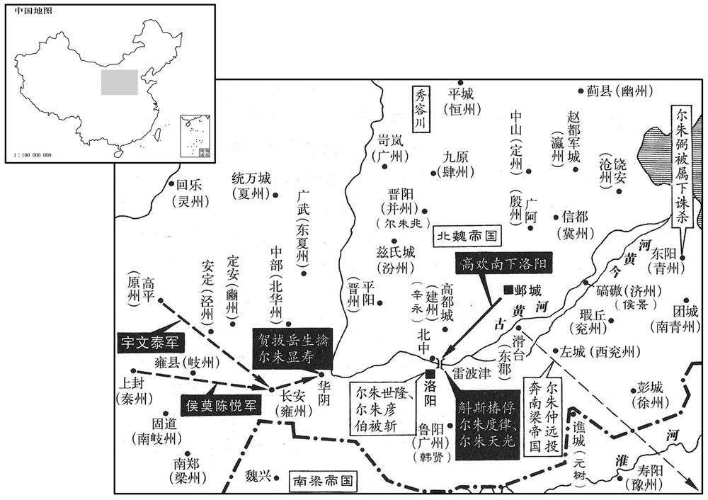
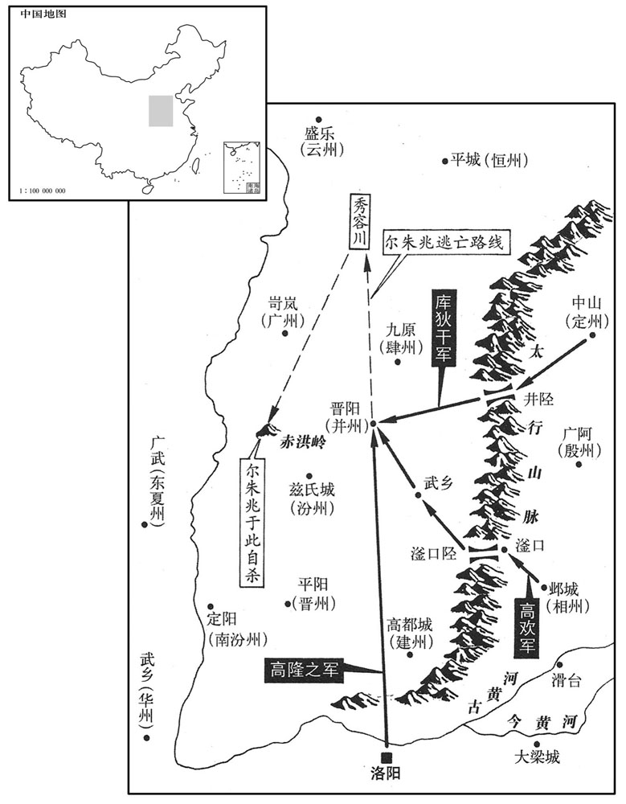

卷次与人物目录 / 卷155
资治通鉴 · 卷第一百五十五【梁纪十一】
公元531年至公元532年 · 原文、白话与胡三省注
本页按胡注本编排保存全卷内容。白话采用本站所据译本，未可靠对应的内容另列说明；事件标题用于定位，并非原书文字。
本卷共94段原文，91段有译文对应，3段缺译或待核对。
卷第一百五十五【梁纪十一】起重光大渊献（辛亥），尽玄黓困敦（壬子），凡二年。
卷首原文与注释
高祖武皇帝十一
公元531年 · 梁高祖武皇帝中大通三年
中大通三年〔（辛亥、五三一）〕
上传原文的注释括号有异常，字符原样保留；无法可靠划分的段落默认全文显示。
本年事件索引（现代整理）
- 梁武帝正月祀南郊并大赦
- 郑先护率部投奔梁朝，梁任其为征北大将军
- 梁武帝祭祀明堂
- 尔朱世隆等迎立广陵王元恭，结束近百日无帝局面
- 元恭即位为帝并改元普泰，八年后重新开口
- 节闵帝仅称帝不称皇，朝臣议论尔朱荣配享
- 尔朱兆因未参与拥立新帝而恼怒，后被劝止
- 孝庄帝旧部史仵龙等投降，尔朱氏拒绝封赏
- 崔祖螭率青州七郡兵围攻东阳，崔光伯出城遇害
- 刘灵助自称燕王，聚众反抗尔朱氏
- 高干、封隆之等杀死孙白鹞并占据信都
- 尔朱羽生率兵袭信都，被高敖曹击败
- 高干迎接高欢并请其主持义举，高欢欣然接纳
- 李元忠继承赵郡李氏部众，曾以义气庇护往来军士
- 李元忠弃官归乡后投奔高欢，劝其进取冀州
- 高欢严令军队不得侵扰百姓，赢得民心
- 高欢进入信都，封隆之、高干开城接纳
- 北魏分封高欢等及尔朱氏诸将，催高欢入朝
- 尔朱世隆专横贪暴，尔朱氏各据一方激起民怨
- 北魏调任贺拔岳、侯莫陈悦镇守岐州、秦州
- 侯渊采纳叱列延庆计策，夜袭并斩杀刘灵助
- 昭明太子萧统去世，朝野哀悼
- 北魏任高欢为东道行台并兼冀州刺史
- 尔朱天光擒获宿勤明达并将其处斩
- 北魏任尔朱彦伯为司徒
- 北魏诏令不再称梁朝为伪梁
- 荆州百姓杀死赵修延，推举李琰之主持州政
- 尔朱仲远派魏僧勖讨伐崔祖螭并将其斩杀
- 梁武帝怀疑昭明太子曾厌胜，太子长子终未被立为嗣
- 司马光批评梁武帝因猜忌昭明太子而祸及后嗣
- 梁武帝立晋安王萧纲为皇太子，周弘正劝其辞让未果
- 太子任徐摛为家令兼管记，徐摛文风形成宫体
- 梁武帝封萧欢等昭明太子诸子为王
- 高欢起兵反抗尔朱氏，信都兵众推举高欢为主
- 李元忠进逼殷州，高欢派高干击杀尔朱羽生并据城
- 尔朱世隆借故屠灭杨播、杨椿、杨津等宗族
- 梁武帝临轩策拜太子并大赦
- 尔朱彦伯以旱灾辞去司徒，斛斯椿又诬杀朱瑞
- 梁武帝赐予宗戚有服属关系者汤沐邑
- 梁任何敬容为尚书右仆射
- 尔朱仲远等轻视高欢，率军前往讨伐
- 节闵帝追尊其父元羽为先帝
- 梁武帝在同泰寺讲授《涅槃经》
- 乐山侯萧正则招集亡命欲攻番禺，被广州刺史斩杀
- 高欢拥立元朗为帝，建立中兴年号
- 尔朱兆与仲远等互相猜疑，后来重新结盟
- 段韶劝高欢以顺讨逆，高欢在广阿大败尔朱兆
- 梁武帝在同泰寺讲《般若经》七日
- 高欢攻打邺城，相州刺史刘诞据城固守
- 南兖州百姓王乞得劫持刺史刘世明并举州降梁

本年形势与背景参考图

本年形势与背景参考图
春，正月，辛巳，上祀南郊，大赦。
春季，正月，辛巳（初十），梁武帝在南郊祭天，实行大赦。
魏尚书右仆射郑先护闻洛阳不守，士众逃散，遂来奔。〔去年，魏敬宗遣郑先护讨东郡。〕丙申，以先护为征北大将军。
北魏尚书右仆射郑先护听说洛阳城失守，部队四散而逃，就前来投奔梁朝。丙申（二十五日），梁朝任命郑先护为征北大将军。
二月，辛丑，上祀明堂。
二月，辛丑（初一），梁武帝祭祀明堂。
魏自敬宗被囚，宫室空近百日。〔被，皮义翻。近，其靳翻。去年十二月壬寅，尔朱兆渡河，囚敬宗；甲寅，迁晋阳；是月己巳，节闵帝即位，始入宫。〕尔朱世隆镇洛阳，商旅流通，盗贼不作。世隆兄弟密议，以长广王疏远，又无人望，欲更立近亲。〔更，工衡翻。〕仪同三司广陵王恭，羽之子也。〔广陵王羽，魏孝文帝之弟。〕好学有志度，正光中领给黄门侍郎，以元叉擅权，托瘖病居龙华佛寺，〔好，呼到翻。瘖，于今翻。华，读曰花。〕无所交通。永安末，有白敬宗言王阳瘖，将有异志，〔考异曰：伽蓝记云：「庄帝疑恭奸诈，夜，遣人盗掠衣物，拔刀剑欲杀之，恭张口年拈舌，竟乃不言。庄帝信其真，放令归第。」今从魏书。〕恭惧，逃于上洛山，〔上洛山在洛州上洛郡上洛县界。〕洛州刺史执送之，〔魏洛州刺史治上洛。〕系治久之，以无状获免。〔无状者，无反状也。治，直之翻。〕关西大行台郎中薛孝通说尔朱天光曰：「广陵王，高祖犹子，〔礼曰：兄弟之子，犹子也。广陵王羽，高祖，孝文庙号。说，式芮翻。〕夙有令望，沈晦不言，〔沈，持林翻。〕多历年所，若奉以为主，必天人允謟。」天光与世隆等谋之，疑其实瘖，使尔朱彦伯潜往敦谕，且胁之，恭乃曰：「天何言哉！」〔用论语孔子之言。〕世隆等大喜。孝通，聪之子也。〔薛聪见一百四十卷齐明帝建武元年。〕
北魏自从孝庄帝被囚禁以后，宫室空虚已近百日。尔朱世隆镇守洛阳，商人行旅流通，盗贼不敢骚扰。尔朱世隆兄弟暗中商议，认为长广王与皇族嫡系比较疏远，而且又素无声望，于是打算重新立一位嫡系近亲为帝。仪同三司广陵王元恭是元羽的儿子，好学而又有远志，正光年间任给事黄门侍郎，因元叉专权，元恭便假托嗓子哑，住到了龙华佛寺，不再与外人交往。永安末年，有人向孝庄帝报告说广陵王装哑，将别有企图。元恭很害怕，便逃到了上洛山，洛州刺史将他抓住送到了洛阳，被囚禁了很长一段时间，因没有发现他有谋反的证据，才释放了他。关西大行台郎中薛孝通对尔朱天光说：“广陵王是高祖的侄子，早有好声望，沉默不言，已经多年，如果推奉他为帝，一定会天人和谐。”尔朱天光跟尔朱世隆等商议立元恭为帝，又怀疑他确实嗓子哑不能说话，于是便派尔朱彦伯秘密前往敦请元恭，并加以胁迫，至此，元恭才说出：“天何言哉！”四字来，尔朱世隆等人大喜过望。薛孝通是薛聪的儿子。
己巳，长广王至邙山南，世隆等为之作禅文，〔为，于伪翻。〕使泰山太守辽西窦瑗执鞭独入，〔守，式又翻。瑗，于眷翻。〕启长广王曰：「天人之望，皆在广陵，愿行尧、舜之事。」遂署禅文。广陵王奉表三让，然后即位，〔帝讳恭，字修业，广陵惠王羽之子也。〕大赦，改元普泰。黄门侍郎邢子才为赦文，叙敬宗枉杀太原王荣之状，节闵帝曰：「永安手翦强臣，非为失德，直以天未厌乱，故逢成济之祸耳。」〔成济弒高贵乡公事见七十七卷魏元帝景元元年。〕因顾左右取笔，自作赦文，直言：「门下：〔魏、晋以来出命皆由门下省，故其发端必曰「敕门下」。〕朕以寡德，运属乐推；思与亿兆，同兹大庆，肆眚之科，一依例程。」〔属，之欲翻。乐，音洛。春秋庄二十二年，肆大眚。杜预注曰：赦有罪也。易称赦过宥罪，书称眚灾肆赦，传称肆眚围郑，皆放赦罪人，荡涤众故以新其心。〕帝闭口八年，至是乃言，中外欣然以为明主，望至太平。〔「至」，一作「致」。〕
己巳（二十九日），长广王来到邙山南侧，尔朱世隆等已替他作好了禅让文告，派泰山太守辽西人窦瑗持鞭独入帐中。窦瑗向长广王启奏道：“天意人心，尽归于广陵，希望您行尧、舜禅代之事。”于是便让长广王签署了禅文。，广陵王奉表辞让了三次，然后才即皇帝位，实行大赦，改年号为普泰。黄门侍郎邢子才起草了赦文，文中记述了孝庄帝枉杀太原王尔朱荣的情况，节闵帝说道：“孝庄帝亲手剪灭强臣，并非为失德之举，只是由于天意还没有厌恶祸乱，所以才重蹈成济杀高贵乡公的灾祸罢了。”因回头命左右取来笔砚，亲自起草赦文，直截了当地写道：“门下省：朕以寡德之身，有幸受到众人推举为帝，朕愿与天下万民，共同庆贺。大赦罪人，一依以往定式。”元恭闭口不言达八年之久，至此才说话，朝廷内外无不欣然，认为他是一位贤明之君，希望他能使天下太平。
庚午，诏以「三皇称『皇』，五帝称『帝』，盖递为冲挹，〔谓皇降称帝，帝降称王，盖递为谦下也。〕自秦以来，竞称『皇帝』，予今但称『帝』，亦已褒矣。」加尔朱世隆仪同三司，赠尔朱荣相国、晋王，加九锡。世隆使百官议荣配飨，司直刘季明曰：〔杜佑通典曰：后魏永安三年，高道穆奏廷尉置司直十人，位在正、监上，不署曹事，唯覆理御史检劾事。〕「若配世宗，于时无功；〔宣武帝庙号世宗。〕若配孝明，亲害其母；〔谓杀胡后也。〕若配庄帝，为臣不终。〔孝武帝始改谥敬宗曰庄帝，此时当称为怀帝。〕以此论之，无所可配。」世隆怒曰：「汝应死！」季明曰：「下官既为议首，依礼而言，不合圣心，翦戮唯命！」世隆亦不之罪。以荣配高祖庙廷。又为荣立庙于首阳山，〔为，于伪翻。〕因周公旧庙而为之，以为荣功可比周公。庙成，寻为火所焚。〔因周公旧庙而祀尔朱荣，周公岂以夺余飨为嫌哉﹖天人之心固不许也。〕
庚午（三十日），北魏节闵帝元恭下诏书道：“三皇称‘皇’，五帝称‘帝’，三代称‘王’，大致是越来越谦让，从秦朝以来，竞相称‘皇帝’，我现在只称‘帝’，就已经是很高的褒扬了。”加封尔朱世隆为仪同三司，追赠尔朱荣为相国、晋王，加九锡。尔朱世隆让文武百官商议让尔朱荣的神位升入皇室宗庙中配飨之事，司直刘季明说：“如果配飨宣武帝的话，尔朱荣在那朝并无功勋；如果配飨孝明帝的话，尔朱荣又曾亲手杀害了孝明帝的母亲胡太后；如果配孝庄帝的话，尔朱荣又为臣不终。由此看来，没有可以配飨的。”尔朱世隆恼怒地说道：“你罪该万死！”刘季明道：“我既然身为谏议官之首，就应该依礼直陈意见，如有不合尊意之处，是杀是剐，任听裁处！”尔朱世隆听后也没敢加罪于他。最后将尔朱荣配飨于孝文帝庙廷。又为尔朱荣在首阳山立了庙，在周公旧庙的基址上建成，以此表示尔朱荣的功绩可以跟周公相比。庙建成后，不久便被一场大火焚烧掉了。
尔朱兆以不预废立之谋，大怒，欲攻世隆，世隆使尔朱彦伯往谕之，乃止。
尔朱兆因没能参预废立皇帝的谋划，非常恼怒，打算攻打尔朱世隆。尔朱世隆赶忙派尔朱彦伯前往尔朱兆处进行劝说，尔朱兆才按兵未发。
初，敬宗使安东将军史仵龙、平北将军阳文义各领兵三千守太行岭，侍中源子恭镇河内，及尔朱兆南向，仵龙、文义帅众先降，由是子恭之军望风亦溃，兆遂乘胜直入洛阳。〔事见上卷上年。仵，疑古翻。行，户刚翻。帅，读曰率。降，下江翻。〕至是，尔朱世隆论仵龙、文义之功，各封千户侯，魏主曰：「仵龙、文义，于王有功，于国无勋。」竟不许。尔朱仲远镇滑台，表用其下都督为西兖州刺史，〔魏收志：西兖州领沛、济阴郡。〕先用后表，诏答曰：「已能近补，何劳远闻！」尔朱天光之灭万俟丑奴也，〔事见上卷上年。万，莫北翻。俟，渠夷翻。〕始获波斯所献师子，送洛阳，〔波斯献师子见一百五十二卷大通二年。〕及节闵帝即位，诏曰：「禽兽囚之则违其性。」命送归本国。使者以波斯道远不可达，于路杀之而返，有司劾违旨，帝曰：「岂可兽而罪人！」遂赦之。〔史言节闵帝贤明而不终者，制于强臣也。使，疏吏翻。劾，户概翻，又户得翻。〕
当初，北魏孝庄帝派安东将军史仵龙、平北将军阳文义各率三千士兵镇守太行岭，派侍中源子恭镇守河内。等到尔朱兆大军南下之时，史仵龙、阳文义率军先投降了尔朱兆，因此源子恭的部队也望风而溃，正因为这样，尔朱兆才得以乘胜直入洛阳城。到现在，尔朱世隆为史仵龙、阳文义二人表功，要将他二人各封为千户侯，节闵帝说道：“史仵龙、阳文义二人对您有功，但于国家却无功。”终未答应。尔朱仲远镇守滑台，上表朝廷请求批准其属下的一位都督为西兖州刺史，先任用之后才上表奏闻朝廷，节闵帝下诏答复说：“既然已经能够就近补用了，何必还远奏于朝廷呢！”尔朱天光灭万俟奴之时，才得到波斯国向北魏朝廷进献的狮子，于是派人将这头狮子送到了洛阳城。等到节闵帝即位后，下诏道：“禽兽被囚禁则违背了它的天性。”便命人将狮子送还给波斯国。使者因波斯国路途遥远，难以到达，便于中途杀掉了狮子返回朝廷，有关部门弹劾使者违背了圣上旨意，节闵帝说道：“怎么可以因为一头野兽而加罪于人呢！”于是便赦免了使者。
魏镇远将军清河崔祖螭等聚青州七郡之众围东阳，〔青州领齐、北海、乐安、勃海、高阳、河间、乐陵七郡，治东阳。〕旬日之间，众十余万。刺史东莱王贵平帅城民固守，〔帅，音率。〕使太傅咨议参军崔光伯出城慰劳，其兄光韶曰：「城民陵纵日久，〔盖言东阳之民，挟州家之势，陵暴属郡，恣纵之日久矣。劳，力到翻。〕众怒甚盛，非慰谕所能解，家弟往，必不全。」贵平强之，〔强，其两翻。〕既出外，人射杀之。〔射，而亦翻。〕
北魏镇远将军清河人崔祖螭等人聚集起青州七郡之众包围了州治东阳，十日之内，达十余万人。青州刺史东莱人王贵平率东阳城中的百姓固守城池，同时派太傅谘议参军崔光伯出城劝慰安抚崔祖螭。崔光伯的哥哥崔光韶说：“东阳城之民欺凌其属郡百姓时日已久，属郡之民怒气很盛，不是靠劝慰调停所能化解的，我弟弟此次前往，一定难以生还。”但王贵平逼崔光伯前往，崔光伯出城后，便被人射杀了。
幽、安、营、并四州行台刘灵助，自谓方术可以动人，又推算知尔朱氏将衰，乃起兵自称燕王、开府仪同三司、大行台，声言为敬宗复雠，〔燕，因肩翻。为，于伪翻。〕且妄述图谶，云「刘氏当王」。〔谶，七谮翻。〕由是幽、瀛、沧、冀之民多从之，〔魏熙平二年分瀛、冀二州置沧州，治饶安城，领浮阳、乐陵、安德三郡。〕从之者夜举火为号，不举火者诸村共屠之。引兵南至博陵之安国城。〔魏收志，博陵郡安国县有安国城，北平蒲阴县亦有安国城，故称博陵以别之。〕
幽、安、营、并四州行台刘灵助，自称其方术可以号召民众，又推算说知道尔朱氏将要衰败，于是便起兵叛乱，自封为燕王、开府仪同三司、大行台，扬言要为孝庄帝报仇，而且胡编图谶，说“刘氏当王”。因此幽、瀛、沧崐、冀州的百姓很多前来投奔他。投奔刘灵助的人以夜间举火把为号，不举火把的，各村就一起把他们杀光。刘灵助率军南下来到了博陵郡的安国城。
尔朱兆遣监军孙白鹞至冀州，〔监，工咸翻。鹞，弋照翻。〕托言调发民马，〔调，徒钓翻。〕欲俟高干兄弟送马而收之。干等知之，与前河内太守封隆之等合谋，潜部勒壮士，袭据信都，杀白鹞，〔考异曰：北史作「白鸡」。今从北齐书。〕执刺史元嶷。〔嶷，鱼力翻。〕干等欲推其父翼行州事，翼曰：「和集乡里，我不如封皮」，〔皮，封隆之小字也。〕乃奉隆之行州事，为敬宗举哀，〔为，于伪翻。〕将士皆缟素，〔将，即亮翻；下同。缟，古老翻。〕升坛誓众，移檄州郡，共讨尔朱氏，仍受刘灵助节度。隆之，磨奴之族孙也。〔封磨奴见一百一十九卷宋高祖永初元年。〕
尔朱兆派监军孙白鹞来到冀州，假托征调百姓的马匹，打算等高乾兄弟送马来的时候收捕他们。高乾等已知道孙白鹞的用意，便与前河内太守封隆之等人合谋，暗中部署部队，袭击并占据了信都，杀掉了孙白鹞，抓获了冀州刺史元嶷。高乾等想推举高乾的父亲高翼主持冀州的行政事务，高翼推辞道：“集聚乡里百姓，我不如封隆之。”于是推举封隆之代行州政，并为孝庄帝举哀，将士们都身穿孝服，升坛誓师，向各州郡发出檄文，共同讨伐尔朱氏，受刘灵助指挥。封隆之是封磨奴的族孙。
殷州刺史尔朱羽生将五千人袭信都，高敖曹不暇擐甲，将十余骑驰击之，〔擐，音宧。骑，奇计翻。〕干在城中绳下五百人，追救未及，敖曹已交兵，羽生败走。敖曹马抬绝世，〔抬，色角翻。〕左右无一当百，时人比之项籍。
殷州刺史尔朱羽生率五千人马袭击信都，高敖曹来不及披挂铠甲，便率领十余人骑马迎击，高乾从城中用绳子吊放下来五百人，追救高敖曹没能赶上，高敖曹已与尔朱羽生的部队交战，尔朱羽生大败而逃。高敖曹的槊术盖世无双，他的部下也个个都以一当百，当时人称高敖曹是项羽再生。
高欢屯壶关大王山，〔魏收地形志：上党郡屯留县有凤凰山，一名大王山。按魏太平真君九年二月，诏于壶关东北大王山累石为三封，又斩其北凤凰山南足以断之，以其有王气也。后高欢果屯兵于其地。〕六旬，乃引兵东出，声言讨信都。信都人皆惧，高干曰：「吾闻高晋州雄略盖世，〔尔朱荣用欢为晋州刺史，故称之。〕其志不居人下。且尔朱无道，弒君虐民，正是英雄立功之会，今日之来，必有深谋，吾当轻马迎之，密参意旨，〔参，候也。〕诸君勿惧也。」乃将十余骑与封隆之子子绘潜谒欢于滏口，说欢曰：「尔朱酷逆，痛结人神，凡曰有知，孰不思奋！明公威德素着，天下倾心，若兵以义立，则屈强之徒不足为明公敌矣。〔屈，与倔同，其勿翻。强，其两翻。屈强之徒，指尔朱氏之党也。〕鄙州虽小，户口不下十万，谷秸之税足济军资，〔秸，工八翻，笹也。〕愿公熟思其计。」干辞气慷慨，欢大悦，与之同帐寝。
高欢驻军于壶关大王山，六十天后，才率兵东进，扬言讨灭信都。信都人都很惊惶恐惧，高乾却说道：“我听说高欢雄才武略，盖世无双，他岂肯久居人下。况且尔朱兆无道，上弑君主，下虐百姓，这正是英雄立功的机会，今日高欢到信都来，肯定有更深的谋划，我应当轻骑前往迎接，暗中观察其意图，诸位不必担心害怕。”于是高乾率十余骑人马与封隆之的儿子封子绘一起秘密至滏口求见高欢，高乾劝高欢说：“尔朱氏残暴叛逆，人神共怨，凡是明白事理的人，谁不想奋起讨伐！明公您平素威德卓著，天下之人倾心归慕，您若能据道义兴兵，则那些倔强之徒，均不足以跟您相抗衡。我们冀州虽然很小，但户数却不下十万，赋税足够接济军资的，希望您深思熟虑。”高乾言辞慷慨激昂，高欢非常高兴，当夜与高乾同帐而卧。
初，河南太守赵郡李显甫，喜豪侠，〔喜，许既翻。〕集诸李数千家于殷州西山方五六十里，居之。〔殷州西山，广阿之西山也。〕显甫卒，子元忠继之。家素富，多出贷求利，元忠悉焚券〔契，约也，即古所谓券也。〕〔【章：胡注「契，约也。」与正文不应，当是刻误；甲十一行本正作「契」；乙十一行本同；孔本同。】〕免责，乡人甚敬之。〔免责，不责其偿也。〕时盗贼倮起，清河有五百人西戍，还，经赵郡，以路梗，共投元忠；〔梗，塞也。〕元忠遣奴为导，曰：「若逢贼，但道李元忠遣。」如言，贼皆舍避。〔舍，读曰舍。〕及葛荣起，元忠帅宗党作垒以自保，〔帅，读曰率。〕坐大槲树下，〔槲，胡谷翻。〕前后斩违命者凡三百人，贼至，元忠辄击却之。葛荣曰：「我自中山至此，连为赵李所破，〔李氏，赵郡之大姓，时号为赵李。〕何以能成大事！」乃悉众攻围，执元忠以随军。贼平，就拜南赵郡太守，〔此言尔朱荣平葛荣时事。魏太和之十一年，分赵郡之平乡、柏人、中丘，巨鹿之南蛮、巨鹿、广阿为南巨鹿郡，后改为南赵郡，属殷州。〕好酒无政绩。〔好，呼到翻。〕
当初，河南太守赵郡人李显甫，性喜豪放行侠，集聚了数千户李姓人家居住于殷州西山方圆五六十里的地方。李显甫死后，他的儿子李元忠承继了家业。李家一直很富足，过去多将钱出借他人以获利息，李元忠将契约全部焚烧掉，免除了所有借钱人的债务，因此乡亲们都非常敬重他。当时盗贼四起，清河县有五百人西戍边关，回来时经过赵郡，因道路不通，便一同来投奔李元忠。李元忠派手下仆人为他们作向导，并对他们说：“如果遇上贼寇的话，只说是李元忠派来的。”这些人按李元忠吩咐的话去说，那些贼寇果然都对他们回避、放行。等到葛荣起兵后，李元忠率宗族亲党修筑堡垒以御敌自卫，他亲自坐在大树下，前后共斩违抗命令者达三百人，葛荣的贼军前来骚扰时，李元忠每次都将其击退。葛荣说道：“我从中山到这里，连连被李氏所打败，这样怎能崐成就我的大事！”于是出动全部军队围攻李元忠所部，抓获了李元忠，将他随军羁押。葛荣的叛乱被平定之后，北魏任命李元忠为南赵郡太守，李元忠在太守任上喜好饮酒，没有做出过什么政绩。
及尔朱兆弒敬宗，元忠弃官归，谋举兵讨之。会高欢东出，元忠乘露车，载素筝浊酒以奉迎，欢闻其酒客，未即见之。元忠下车独坐，酌酒擘脯食之，谓门者曰：「本言公招延俊杰，今闻国士到门，不吐哺辍洗，其人可知，〔以周公、汉祖之事责欢也。洗，先典翻。〕还吾刺，勿通也！」门者以告，欢遽见之，引入，觞再行，元忠车上取筝鼓之，长歌慷慨，歌阕，〔阕，苦穴翻，歌终也。〕谓欢曰：「天下形势可见，明公犹事尔朱邪﹖」欢曰：「富贵皆因彼所致，安敢不尽节！」元忠曰：「非英雄也！高干邕兄弟来未﹖」〔高干，字干邕。〕时干已见欢，欢绐之曰：「从叔辈粗，何肯来！」〔欢与干兄弟同出于勃海，故称从叔。绐，待亥翻。从，才用翻。〕元忠曰：「虽粗，并解事。」〔解，胡买翻，晓也。〕欢曰：「赵郡醉矣。」使人扶出。元忠不肯起，孙腾进曰：「此君天遣来，不可违也。」欢乃复留与语，〔复，扶又翻。〕元忠慷慨流涕，欢亦悲不自胜。〔胜，音升。〕元忠因进策曰：「殷州小，无粮仗，不足以济大事。若向冀州，高干邕兄弟必为明公主人。〔魏冀州治信都，高干邕兄弟据之，故云然。〕殷州便以赐委。冀、殷既合，沧、瀛、幽、定自然弭服，唯刘诞黠胡或当乖拒，〔刘诞亦契胡种也，时为相州刺史，镇邺。黠，下八翻。〕然非明公之敌。」欢急握元忠手而谢焉。
等到尔朱兆弑杀了孝庄帝以后，李元忠便弃官回乡，策划兴兵讨伐尔朱兆。正赶上高欢出兵东进，李元忠便乘一辆敞篷车，车上载着素筝浊酒前来迎接高欢。高欢听说李元忠是一位酒徒，便没有立即会见他。李元忠下车后独自坐下，倒酒撕肉，边饮边吃，对高欢的门卫说：“本以为高公能招揽英雄豪杰，现在他既然已知道国士到了门前，却并不像周公那样放下饭碗、停止洗发去迎接贤士，他这个人也可想而知了，请退还我的名片，不必通报了。”门卫报告给高欢，高欢听后马上接见了李元忠，引入大帐之中。两杯酒喝过，李元忠从车上取下筝弹奏起来，长歌一曲，慷慨激昂，唱完歌，李元忠对高欢说道：“而今天下形势已昭然可见，明公您还要为尔朱氏效力吗？”高欢道：“我的功名富贵都得之于尔朱氏，怎敢不为尔朱氏尽节！”李元忠道：“您如此怎称得上是英雄啊！高乾兄弟来过没有？”当时高乾已经见过了高欢，但高欢却哄骗李元忠说：“我堂叔等性格粗犷，怎肯前来见我！”李元忠道：“高乾兄弟虽性情粗犷，却都明晓事理。”高欢说道：“您真是喝醉了。”于是让人将李元忠扶出去。李元忠不肯起身，孙腾向高欢进言道：“这个人乃是上天派来的，您不能违背了天意啊。”高欢于是又留下李元忠，与他交谈。李元忠陈述时事言辞慷慨，泪流满面，高欢也不禁悲从中来。李元忠趁机向高欢献计道：“殷州太小，缺乏粮草兵器，不能成就大事。如果前往冀州，高乾兄弟定会成为明公的东道主，倾心事公，殷州便可赐委我李元忠。这样冀州、殷州既已联为一体，那么沧州、瀛州、幽州、定州等自然顺服了，只有刘诞这个狡猾的胡人也许会抗拒，但他远不是明公您的对手。”高欢听后紧紧握住李元忠的手，向他称谢道歉。
欢至山东，约勒士卒，丝毫之物不听侵犯，每过麦地，欢辄步牵马，远近闻之，皆称高仪同将兵整肃，益归心焉。〔尔朱氏加欢仪同三司，故当时以称之。史言高欢能收众心，以倾尔朱。将，即亮翻。〕
高欢率部队到了太行山东面，对士兵严加约束，一丝一毫的东西不许侵犯。每次行军路过麦地，高欢总是牵马步行，远近之人听说之后，都称赞高欢带兵有方，纪律严明，也就更加归心于他了。
欢求粮于相州刺史刘诞，诞不与；〔相，息亮翻。〕有车营租米，〔「车营」，北齐纪作「军营」。〕欢掠取之。进至信都，封隆之、高干等开门纳之。高敖曹时在外略地，闻之，以干为妇人，遗以布裙；〔裙，渠云翻，妇人下裳也。遗，于季翻。〕欢使世子澄以子孙礼见之，敖曹乃与俱来。〔敖曹以欢叙群从子侄之礼乃来，孰谓其粗也。〕
高欢向相州刺史刘诞索要粮食，刘诞没有给，这时恰有车营租米，高欢便派兵将米抢夺过来。部队前进至信都，封隆之、高乾等打开城门迎接高欢入城。高敖曹当时正在外面攻城略地，听说此事之后，认为高乾真是妇人之见，于是送给了他一件裙子。高欢特派长子高澄执子孙之礼往见高敖曹，高敖曹这才与高澄一起回到信都。
癸酉，魏封长广王晔为东海王，以青州刺史鲁郡王肃为太师，淮阳王欣为太傅，尔朱世隆为太保，长孙稚为太尉，赵郡王谌为司空，〔谌，氏壬翻。〕徐州刺史尔朱仲远、雍州刺史尔朱天光并为大将军，并州刺史尔朱兆为天柱大将；赐高欢爵勃海王，征使入朝。〔高欢之先本勃海人，尔朱氏爵之为本郡王，欲以诱致之。朝，直遥翻。〕长孙稚固辞太尉，〔世衰难佐，故辞。〕乃以为骠骑大将军、开府仪同三司。〔骠，匹妙翻。骑，奇计翻。〕尔朱兆辞天柱，曰：「此叔父所终之官，我何敢受！」固辞，不拜，寻加都督十州诸军事，〔十州，南尽汾、晋，北极云、朔。〕世袭并州刺史。高欢辞不就征。尔朱仲远徙镇大梁，复加兖刺史。〔大梁，兖州统内，故加兖州。复，扶又翻；下无复、不复同。〕
本段缺少可靠对应白话，原文完整保留；未使用生成译文。
尔朱世隆之初为仆射也，〔大通二年，魏尔朱荣入洛，以世隆为尚书仆射。〕畏尔朱荣之威严，深自刻厉，留心几案，〔案亦几属，应文书皆陈于几案而省览之。留心几案，谓留心于尚衵省文书也。又案，据也，凡官文书留以为据者，亦谓之案。〕应接宾客，有閞敏之名。及荣死，无所顾惮，为尚书令，家居视事，坐符台省，事无大小，不先白世隆，有司不敢行。使尚书郎宋游道、邢昕在其听事东西别坐，受纳辞讼，称命施行；〔称命者，称世隆之命也。昕，许斤翻。听，读曰厅。〕公为贪淫，生杀自恣；又欲收军士之意，泛加阶级，皆为将军，无复员限，自是勋赏之官大致猥滥，人不复贵。〔猥，杂也。〕是时，天光专制关右，兆奄有并、汾，仲远擅命徐、兖，世隆居中用事，竞为贪暴。而仲远尤甚，所部富室大族，多诬以谋反，籍没其妇女财物入私家，〔私家，谓仲远私家也。〕投其男子于河，如是者不可胜数。〔胜，音升。〕自荥阳已东，租税悉入其军，不送洛阳。东南州郡自牧守以下至士民，畏仲远如豺狼。由是四方之人皆恶尔朱氏，而惮其强，莫敢违也。〔为尔朱氏败张本。守，式又翻。恶，乌路翻。〕
尔朱世隆当初作尚书仆射的时候，畏惧尔朱荣的威严，很谨慎小心，对尚书省文书也多留心处理，应对接洽宾客，有贤明敏达之名。等到尔朱荣死后，尔朱世隆便再也没有什么顾虑害怕了，身为尚书令，竟在家中处理公事，指挥台省，无论事情大小，若不先禀告尔朱世隆，有关部门便不敢执行。尔朱世隆让尚书郎宋游道，邢昕在其大厅东西两旁分坐，接受各种呈告诉讼文书，一切均要称尔朱世隆之命方能执行；尔朱世隆公然贪赃淫佚，他人生死，全由其随意定夺；尔朱世隆还想收买军心，对将士滥加提拔，都提为将军，没有员额限制，从此授勋奖赏之官，大都很杂很滥，人们不再看重官爵。这时期，尔朱天光专制关右，尔朱兆奄有并州、汾州，尔朱仲远独擅徐、兖二州，尔朱世隆则身居朝中，大权独揽，四人一个更比一个贪婪、残暴。其中尤以尔朱仲远为最，尔朱仲远所辖境内的富家大族，大多被其诬为谋反，籍没妇女财产入于尔朱仲远私家，将男子投入河中，这类事情数不胜数。从荥阳以东，租税全部充补其军用，不向京城洛阳上交。东南各州郡自牧守以下到普通的士卒百姓，畏惧尔朱仲远如同畏惧豺狼一般。因此四方百姓都很憎恶尔朱氏，只是由于畏惧尔朱氏的强大，不敢反抗罢了。
己丑，魏以泾州刺史贺拔岳为岐州刺史，渭州刺史侯莫陈悦为秦州刺史，并加仪同三司。〔泾、渭荒残而秦、岐差完，故以内迁为进律。〕
两版字句有差异，建议核对原文。
魏使大都督侯渊、骠骑大将军代人叱列延庆讨刘灵助，至固城，渊畏其众，欲引兵西入，据关拒险以待其变，延庆曰：“灵助庸人，假妖术以惑众，大兵一临，彼皆恃其符厌，岂肯戮力致死，与吾兵争胜负哉！不如出营城外，诈言西归，灵助闻之必自宽纵，然后潜军击之，往则成擒矣。”渊从之。出顿城西，声云欲还，丙申，简精骑一千夜发，直抵灵助垒；灵助战败，斩之，传首洛阳。初，灵助起兵，自占胜负，曰：“三月之末，我必入定州，尔朱氏不久当灭。”及灵助首函入定州，果以是月之末。
魏使大都督侯渊、骠骑大将军代人叱列延庆讨刘灵助，至固城，〔叱列，虏复姓。固城，当在中山城东北，安国城西南。〕渊畏其众，欲引兵西入，据关拒险以待其变，延庆曰：「灵助庸人，假妖术以惑众，〔妖，于骄翻。〕大兵一临，彼皆恃其符厌，〔厌，一协翻。谓刘灵助书为符敕以厌胜也。〕岂肯戮力致死，与吾兵争胜负哉！不如出营城外，诈言西归，灵助闻之必自宽纵，然后潜军击之，往则成擒矣。」渊从之。出顿城西，声云欲还，丙申，简精骑一千夜发，直抵灵助垒；灵助战败，斩之，传首洛阳。初，灵助起兵，自占胜负，曰：「三月之末，我必入定州，尔朱氏不久当灭。」及灵助首函入定州，果以是月之末。〔史言用兵不可徒信占验而无方略。〕
北魏派大都督侯渊、骠骑大将军代郡人叱列延庆率军讨伐刘灵助。兵至固城，侯渊畏惧刘灵助兵力强盛，打算引兵往西入关，然后据关凭险以等待时机变化。叱列延庆对侯渊说：“刘灵助乃是庸人，假借妖术迷惑众人，我军一到，他的军队便都只想凭仗其符咒取胜，怎肯拼死厮杀，跟我军决胜负呢！我们不如扎营城外，诈称要领兵往西回去，刘灵助听说后一定会戒备松懈，之后我们秘密出兵袭击敌人，定能擒获刘灵助。”侯渊采纳了叱列廷庆的计策。出城驻扎于固城西面，声言要回师。丙申（十四日），侯渊等挑选一千名精锐骑兵夜间出发，直抵刘灵助的营垒。刘灵助战败被杀，首级被送至洛阳。当初，刘灵助起兵之时，自己曾占卜胜负，说：“三月底，我一定入定州，尔朱氏不久就要灭亡。”等到刘灵助首级用匣子装着送到定州的时候，果真是这月之末。[10]夏，四月，乙巳，昭明太子统卒。太子自加元服，上即使省录朝政，百司进事，填委于前，太子辩析诈谬，秋毫必睹，但令改正，不加按劾，平断法狱，多所全宥，宽和容众，喜愠不形于色。好读书属文，引接才俊，赏爱无倦；出宫二十余年，不畜声乐。每霖雨积雪，遣左右周行闾巷，视贫者赈之。天性孝谨，在东宫，虽燕居，坐起恒西向，或宿被召当入，危坐达旦。及寝疾，恐贻帝忧，敕参问，辄自力手书。及卒，朝野惋愕，建康男女，奔走宫门，号泣道路。
夏，四月，乙巳，昭明太子统卒。太子自加元服，〔天监十四年，太子加元服。〕上即使省录朝政，〔省，悉景翻。朝，直遥翻。〕百司进事，填委于前，太子辩析诈谬，秋毫必睹，但令改正，不君按劾，〔劾，户概翻，又户得翻。〕平断法狱，多所全宥，宽和容众，喜愠不形于色。好读书属文，〔断，丁乱翻。好，呼报翻。属，之欲翻。〕引接才俊，赏爱无倦；出宫二十余年，〔言自禁中出居东宫也。〕不畜声乐。每霖雨积雪，遗左右周行闾巷，视贫者赈之。〔行，下孟翻。赈，之忍翻。此所谓好行小惠也。〕天性孝谨，在东宫，虽燕居，坐起恒西向，〔必西向者，不敢背上台也。恒，户登翻。谨，居忍翻。〕或宿被召当入，〔隔夜为宿。被，皮义翻。〕危坐达旦。及寝疾，恐贻帝忧，敕参问，辄自力手书。〔言帝出敕候问，太子辄力疾手书，自为奏答。〕及卒，朝野惋愕，建康男女，奔走宫门，号泣道路。〔卒，子恤翻。朝，直遥翻。惋，乌贯翻。愕，五各翻。奔，甫门翻。走，音奏。号，户刀翻。〕
本段缺少可靠对应白话，原文完整保留；未使用生成译文。
癸丑，魏以高欢为大都督、东道大行台、冀州刺史；〔东道，谓太行山恒山以东也。〕又以安定王尔朱智虎为肆州刺史。
癸丑（十四日），北魏任命高欢为大都督、东道大行台、冀州刺史，又任命安定王尔朱智虎为肆州刺史。
魏尔朱天光出夏州，遣将讨宿勤明达，癸亥，擒明达，送洛阳，斩之。〔尔朱天光既擒万俟丑奴，又擒宿勤明达，河、陇平矣，不知乃以为宇文泰之资也。夏，户雅翻。将，即亮翻。〕
北魏尔朱天光出兵夏州，调兵遣将征讨宿勤明达，癸亥（二十四日），擒获了宿勤明达，将他送到洛阳后处斩。
丙寅，魏以侍中、骠骑大将军尔朱彦伯为司徒。
丙寅（二十七日），北魏任命侍中、骠骑大将军尔朱彦伯为司徒。
魏诏有司不得复称伪梁。〔魏不竞于梁故也。复，扶又翻；下同。〕
北魏下诏命令有关部门不得再称梁为伪梁。
五月，丙子，魏荆州城民斩赵修延，复推李琰之行州事。〔赵修延执李琰之见上卷上年。〕
五月，丙子（初七），北魏荆州城百姓斩杀了赵延，又推举李琰之代行州政。
魏尔朱仲远使都督魏僧勖等讨崔祖螭于东阳，斩之。〔考异曰：北齐李浑传：「普泰中，崔社客反于海岱，攻围青州。以浑为征东将军、都官尚书、行台赴援，而社客宿将多谋，诸城各自保固，坚壁清野。诸将议有异同，浑曰：『社客贼之根本，若简练骁勇，衔枚夜袭，径趋营下，出其不意，咄嗟之间，便可擒殄。如社客就擒，则诸郡可传檄而定。』诸将迟疑，浑乃速行，未明，达城下，贼徒惊散，擒社客，斩首送洛阳。」按其年时事迹与祖螭略同，未知社客即祖螭，为别一人也。今从魏帝纪。〕
北魏尔朱仲远派遣都督魏僧勖等至东阳讨伐崔祖螭，将其斩杀。
初，昭明太子葬其母丁贵嫔，〔普通七年，丁贵嫔卒。〕遣人求墓地之吉者。或赂宦者俞三副求卖地，云若得钱三百万，以百万与之。三副密启上，言「太子所得地不如今地于上为吉。」〔今地，谓求卖之地也。〕上年老多忌，即命市之。葬毕，有道士云：「此地不利长子，若厌之，〔长，知两翻。厌，一协翻，又于琰翻；下厌祷同。〕或可申延。」〔申，宽也。〕乃为蜡鹅及诸物埋于墓侧长子位。宫监鲍邈之、魏雅初皆有宠于太子，〔五代志，梁制，东宫有外监殿局、内监〔殿局〕。宫监者，即唐内直局之职也，龙朔二年改监曰内直郎。〕邈之晚见疏于雅，乃密启上云：「雅为太子厌祷。」上遣检掘，果得鹅物，大惊，将穷其事，徐勉固谏而止，但诛道士。由是太子终身惭愤，不能自明。及卒，上征其长子南徐州刺史华容公欢至建康，欲立以为嗣，衔其前事，犹豫久之，卒不立，〔卒，子恤翻。〕庚寅，遣还镇。〔史因帝不立孙，究言事始。呜呼！帝于豫章王综、临贺王正德，虽犯恶逆，犹容忍之，至于昭明被谗，则终身衔其事，盖天夺其魄也。为昭明子詧仇视诸父张本。〕
当初，梁昭明太子在埋葬生母丁贵嫔之时，曾派人四处求购风水好的基地。有人向宦官俞三副行贿，求他帮助将自己的地卖与昭明太子，并说如果得到三百万钱的话，则将其中的一百万钱送给俞三副。俞三副于是便暗中启奏梁武帝，说：“太子所购之地不如现在这块土地对皇上您更吉祥。”武帝年纪大了，多所忌讳，便命人将这块地买了下来。埋葬了丁贵嫔后，有个道士说：“这块地不利于长子，但如果镇一镇，或许还可以宽延一下。”于是便将蜡鹅及其他物品埋在了丁贵嫔墓侧的长子之位。宫监鲍邈之、魏雅当初都很受昭明太子宠幸，鲍邈之后来被魏雅疏远，于是便暗中向武帝启奏道：“魏雅竟敢给太子诅咒祈祷。”梁武帝派人去墓地检查挖掘，果然挖到了蜡鹅等物。武帝大惊，要彻底追究这件事，徐勉竭力劝谏，武帝这才作罢，只诛杀了那位道士。因为此事，太子终生惭愧忧愤，难以自明。等到太子去世后，梁武帝将太子的长子南徐州刺史华容公萧欢召到建康，想立萧欢为继承人，但心中仍记恨那件崐往事，犹豫了很长时间，最终还是没有立萧欢为嗣。庚寅（二十一日），又打发萧欢回到了南徐州。
史家评论 · 原文及其白话
臣光曰：君子之于正道，不可少顷离也，〔少，诗沼翻。离，力智翻。〕不可跬步失也。〔跬，窥婢翻。〕以昭明太子之仁孝，武帝之慈爱，一梁嫌疑之迹，身以忧死，罪及后昆，求吉得凶，不可湔涤，可不戒哉！〔湔，将仙翻。〕是以诡诞之士，奇邪之术，君子远之。〔奇，居宜翻，异也。远，于愿翻。〕
臣司马光曰：君子之于正道，不能稍微有所偏离，也不能有半步过失啊。以昭明太子这样的仁孝之子，以梁武帝这样的慈爱之君，一旦产生了一点嫌疑，不但太子因忧而致死，而且祸害延及后代子孙。昭明太子本为求吉反而得凶，以致无法洗刷自己的冤屈，人们能不深深引以为戒么！所以对于那些诡诈怪诞之徒，奇异邪佞之术，君子要远远地离开。
丙申，立太子母弟晋安王纲为皇太子。朝野多以为不顺，〔立世适孙为顺。朝，直遥翻。〕司议侍郎周弘正，〔按陈书周弘正传：普通中初置司文义郎，直寿光省，以弘正为司义侍郎。「议」当作「义」。〕尝为晋安王主簿，乃奏记曰：「谦让道废，多历年所。伏惟明大王殿下，天挺将圣，〔论语：太宰问于子贡曰：「夫子圣者欤﹖」子贡曰：「固天纵之将圣。」朱元晦注曰：将，殆也，谦若不敢知之辞。或曰：将，大也。〕四海归仁，是以皇上发德音，以大王为储副。意者愿闻殿下抗目夷上仁之义，〔左传：宋桓公疾，太子兹父固请曰：「目夷长且仁，君其立之。」公命子鱼。子鱼辞曰：「能以国让，仁孰大焉﹖臣弗及也。」遂走而退。子鱼，目夷字也。〕执子臧大贤之节，〔左传：成十三年，诸侯伐秦，曹宣公卒于师，曹人使公子负刍守，公氶欣时逆曹伯之丧；负刍杀太子而自立。既葬，子臧将亡，国人皆将从之。成公乃惧，告罪，且请焉，子臧乃反。诸侯讨曹成公，执而归诸京师。将见于臧于王而立之，辞曰：「圣挞节，次守节。为君，非吾节也，虽不能圣，敢失守乎！」遂逃，奔宋。负刍立，是为成公。子臧，欣时字也。〕逃玉张：「玉」作「王」。】〕舆而弗乘，〔「玉舆」当作「王舆」。庄子让王篇曰：越人三世弒其君，王子搜患之，逃乎丹穴。而越国无君，求王子搜不得，从之丹穴。王子搜不出，越人熏之以艾，乘以王舆，王子搜援绥登车，仰天而呼曰：「君乎君，独不可以舍我乎！」〕弃万乘如脱屣，〔孟子曰：舜视弃天下，犹弃敝屣也。乘，绳正翻。屣，所是翻。〕庶改浇竞之俗，以大吴国之风。〔谓太伯以天下让，逃而君吴也。浇，坚尧翻，薄也。〕古有其人，今闻其语，能行之者，非殿下而谁！使无为之化复生于遂古，〔复，扶又翻。朱元晦曰：遂，往也。〕让王之道不坠于来叶，〔庄子外篇有让王，述尧、舜以天下让。来叶，来世也。〕岂不盛欤！」王不能从。弘正，舍之兄子也。〔周舍柄用于天监之初。〕
丙申（二十七日），梁武帝立昭明太子同母弟晋安王萧纲为皇太子。朝野之士多认为不符合正常的顺序，司议侍郎周弘正，曾做过晋安王萧纲的主簿，他向萧纲上书劝谏道：“谦让之道不存，已有多年。敬告大王殿下，天意大概要使您成为圣者，四海之内称赞您是仁德君子，所以皇上传下圣旨，立大王您为皇太子。我真心希望您能象目夷那样崇尚仁义，不居皇位；象子臧那样固辞君位，坚守臣节；躲开王舆而不乘；弃天子的尊位如弃敝屣，庶几乎可以一改浇薄竞争之俗，使吴太伯那样的好风气发扬光大。古代有这样的人，今天还能听到他们说过的话，但今天能够付诸行动的，只有殿下您！使往古无为之治的风气再现于今日，令谦让王位之举流传后世，岂不是件盛事么！”萧纲没有听从他的劝谏。周弘正是周舍哥哥的儿子。
太子以侍读东海徐摛为家令，〔晋王绍宗迁秘书少监，仍侍皇太子读书，此侍读之始也。〕兼管记，寻带领直。〔管记，职同公府记室。梁制，上台、东宫皆有领直，领直者，领直卫兵也。〕摛文体轻丽，春坊尽学之，〔东宫谓之春宫，宫坊谓之春坊。〕时人谓之宫体。上闻之，怒，召摛，欲加诮责。及见，〔诮，才笑翻。见，贤遍翻。〕应对明敏，辞义可观，意更释然，因问经史及释教，摛商较从横，〔较，古搉翻。从，子容翻。〕应对如响，上甚加叹异，〔上崇信释氏，意谓徐摛业儒，但知经史而已，扣击之余，及于释教，商较从横，应对如响，遂加叹异。殊不思上有好者下必有甚者焉，释教盛行，可以媒富贵利达，江东人士孰不从风而靡乎！〕宠遇日隆。领军朱异不悦，〔异，羊至翻。〕谓所亲曰：「徐叟出入两宫，渐来见逼，我须早为之所。」遂乘间白上曰：「摛年老，又爱泉石，意在一郡自养。」上谓摛真欲之，乃召摛，谓曰：「新安大好山水」，遂出为新安太守。〔史言朱异固宠忌前，间，古苋翻。〕
皇太子萧纳命侍读东海人徐为家令，兼任管记，不久又任命他为领直。徐的文章词赋，艳丽轻靡，东宫文人都模仿他的风格，当时人们称之为“宫体”。梁武帝听说之后，很恼怒，便将徐召来，打算好好讥诮责怪他一番，等到见到徐后，发现他应答得很机敏，言辞富有文彩，梁武帝内心的不快之意反而消释了。接着又向徐问了些经史和佛教方面的问题，徐竟纵横比较，应对如流，于是梁武帝对他大加称赞，越来越宠幸他了。将军朱异看到这种情形很不高兴，对他的亲信之人说：“徐近来出入两宫，深受庞幸，对我越来越构成威胁了，我必须早点作出安排。”于是朱异便乘机向武帝进言道：“徐年纪已大，又喜爱山水，他希望能到一个郡中任职以自养。”梁武帝以为徐真的想这样，便将徐召来，对他说道：“新安郡山水景色非常优美。”于是便将徐调出京城出任新安郡太守。
六月，癸丑，立华容公欢为豫章王，其弟枝江公誉为河东王，曲阿公詧为岳阳王。〔詧，与察同。〕上以人言不息，〔谓不顺也。〕故封欢兄弟以大郡，用慰其心。久之，鲍邈之坐诱掠人，〔诱，音酉。〕罪不至死，太子纲追思昭明之冤，挥泪诛之。
六月，癸丑（十五日），梁武帝立华容公萧欢为豫章王，立萧欢的弟弟枝江公萧益为河东王，曲阿公萧为岳阳王。梁武帝因人言不止，所以封萧欢兄弟以大郡，想以此来安慰他们。过了很长一段时间，鲍邈之因诱骗抢人触犯刑法，罪行并不至于判处死刑，但太子萧纲想到昭明太子的冤屈，便挥泪将他处决了。
魏高欢将起兵讨尔朱氏，镇南大将军斛律金、军主善无库狄千〔善无县，前汉属鴈门郡，后汉属定襄郡，魏、晋省，后魏天平二年始以善无为郡也。〕与欢妻弟娄昭、妻之姊夫段荣皆劝成之。欢乃诈为书，称尔朱兆将以六镇人配契胡为部曲，众皆忧惧。〔契，欺讫翻。〕又为并州符，征兵讨步落稽，〔尔朱兆擅命并、汾。此亦高欢伪为兆符也。步落稽，即稽胡。〕发万人，将遣之。孙腾与都督尉景为请留五日，如此者再，〔孙腾、尉景既为镇人请留，必又因其愿留之情扇动之于下，此当以意会也。为，于伪翻。〕欢亲送之郊，雪涕执别，众皆号恸，声震原野。欢乃谕之〔先感动其心，而后谕之。号，户刀翻。〕曰：「与尔俱为失乡客，义同一家，〔高欢亦镇户，故云然。〕不意在上征发乃尔！今直西向，已当死，〔自信都赴并、汾为西向。〕后军期，又当死，配国人，又当死，〔尔朱，契胡种也，故谓契胡为国人。〕奈何﹖」众曰：「唯有反耳！」欢曰：「反乃急计，然当推一人为主，谁可者﹖」众共推欢，欢曰：「尔乡里难制。不见葛荣乎：虽有百万之众，曾无法度，终自败灭。今以吾为主，当与前异，毋得陵汉人，犯军令，生死任吾则可；不然，不能为天下笑。」〔高欢先立法制以齐其众，故能成大事。史言盗亦有道。〕众皆顿颡曰：「死生唯命！」欢柔椎牛飨士，庚申，起兵于信都，〔考异曰：魏书帝纪起兵在庚申，北齐书帝纪在庚子，北史、魏纪、齐纪亦然。今从魏书纪。〕亦未敢显言叛尔朱氏也。
北魏高欢将起兵征讨尔朱氏，镇南大将军斛律金、军主善无库狄千与高欢的妻弟娄昭、高欢妻子的姐夫段荣等都力劝高欢起兵。高欢于是假借尔朱兆的名义写了一封假信，对士兵们说尔朱兆要把六镇之人配给契胡为部曲，大家听后都很忧虑恐惧。高欢又伪造了一张并州的符令，要征调高欢军讨伐步落稽。高欢派了一万人马，正要出发，孙腾与都督尉景为六镇人向高欢请求停留五天，这样停留了两次。高欢亲自将这支队伍送到郊外，流着眼泪与将士们告别，将士们都失声痛哭，声震原野。高欢于是又抚慰告诫将士们道：“我与你们大家都是失去了故乡之人，情义如同一家人，没想到上面如此征调我们！今若西向并、汾讨伐步落稽，已经应当死了，延误军期，又该当处死，配属契胡，还是要死，我们该如何是好？”众人齐声说道：“只有造反了！”高欢道：“造反乃迫不得已之计，但应推举一人为首领，谁能担当呢？”众人共推高欢为首领，高欢说道：“你们都是乡里乡亲，难以控制。不见当初葛荣么，虽然拥有百万大军，但却全无法令制度，终究还是败亡了。现在既然大家推举我为首领，就应该跟以前有所不同，不能凌辱汉人，违犯军纪，生死任我指挥调度才行；否则，就会被天下人耻笑。”众人都点头说：“我们不论生死都听您号令！”高欢于是杀牛犒飨将士，庚申（二十二日），高欢在信都起兵，但尚未敢公开声言反叛尔朱氏。
会李元忠举兵逼殷州，欢令高干帅众救之。〔高干预欢密谋，而使之救殷州，此不过使之诱禽尔朱羽生耳。〕干轻骑入见〔【章：甲十一行本「见」下有「刺史」二字；乙十一行本同；张校同；退斋校同。】〕尔朱羽生，与指画军计，〔骑，其计翻。〕羽生与干俱出，因擒斩之，持羽生首谒欢。欢抚膺曰：「今日反决矣！」〔高欢反谋非一日矣，及尔朱羽生授首，方言反决，盖其初犹有疑李元忠、高干邕之心。元忠既举兵逼殷州，干邕又斩羽生，欢于是深悉二人之心，而冀、殷之势已合，于是决反。〕乃以元忠为殷州刺史，镇广阿。欢于是抗表罪状尔朱氏，尔朱世隆匿之不通。〔世隆为尚书令，故得匿欢表。〕
正值李元忠发兵逼近殷州，高欢命高乾率军前往援救殷州。高乾轻骑入城会见尔朱羽生，与尔朱羽生一起商议军事计划，尔朱羽生跟高乾一起出城，高乾趁机捕获并斩杀了尔朱羽生，带着尔朱羽生的人头前来拜见高欢。高欢摸着胸口说：“今日只好决计造反了！”遂任命李元忠为殷州刺史，镇守广阿。高欢于是上表朝廷历举尔朱氏的罪状，尔朱世隆将此表私藏扣押，没有上报皇帝。
魏扬播及弟椿、津皆有名德。播刚毅，椿、津谦恭，家世孝友，缌服同爨，〔凡三从之服服缌麻。〕男女百口，人无间言。〔间，古苋翻，异也。〕椿、津皆至三公，一门七郡太守，三十二州刺史。〔史言杨氏贵盛。〕敬宗之诛尔朱荣也，播子侃预其谋；〔事见上卷上年。〕城阳王徽、李或，皆其姻戚也。尔朱兆入洛，侃逃归华阴，〔华，户化翻。〕尔朱天光使侃妇父韦义远招之，与盟，许贳其罪。〔贳，贷也，音始制翻。〕侃曰：「彼虽食言，死者不过一人，犹冀全百口。」乃出应之，天光杀之。时椿致仕，与其子昱在华阴，椿弟冀州刺史顺、司空津、顺子东雍州刺史辨、正平太守仲宣皆在洛。〔雍，于用翻。〕秋，七月，尔朱世隆诬奏杨氏谋反，请收治之，〔治，直之翻。〕魏主不许；世隆苦请，帝不得已，命有司检按以闻。壬申夜，世隆遣兵围津第，天光亦遣兵掩椿家于华阴，东西之族无少长皆杀之，〔世隆、天光先已约同夷杨氏，故东西一时俱发。居华阴者为西族，居洛者为东族。少，诗照翻。长，知两翻。〕籍没其家。世隆奏云：「杨氏实反，与收兵相拒，已皆格杀。」帝惋怅久之，不言而已，〔惋，乌贯翻。怅，丑亮翻。〕朝野闻之，无不痛愤。津子逸为光州刺史，尔朱仲远遣使就杀之。唯津子愔于被收时适出在外，逃匿，获免，往见高欢于信都，〔使，疏吏翻。愔，于今翻。被，皮义翻。考异曰：北齐书愔传云：「偣父津为并州刺史，偣随之任。俄而孝庄幽崩，愔时适欲还都，行达邯郸，过津义从杨宽家，为宽所执。至相州，见刺史刘诞，以愔名家盛德，甚相哀念，遣队主巩荣贵防禁送都。至安阳亭，荣贵遂与俱逃，乃投高昂兄弟，潜窜累载。属齐神武至信都，遂投刺辕门，即署行台郎中。」按时齐神武已在信都，言潜窜累载，误矣。又云孝庄幽崩，而愔欲还都见执，皆非也。〕泣诉家祸，因为言讨尔朱氏之策，〔为，于伪翻。〕欢甚重之，即署行台郎中。〔杨愔门地既高，又有干用，高欢起兵之初，藉人望以为重，藉才干以为用，所以擢而用之。士无贤不肖，入朝见嫉，田横岛之逃实基于此。〕
北魏的杨播与其弟杨椿、杨津都素有声望、品德。杨播性情刚毅，杨椿、杨津则性格谦恭。杨家世代孝悌，缌服以内的亲属同灶而食，全家男女上百口，没有异言。杨椿、杨津官位皆至三公，杨家一门出了七位郡太守，三十二位州刺史。孝庄帝诛杀尔朱荣的时候，杨播的儿子杨侃参预了谋划；城阳王元徵、李，都是杨家的姻亲。尔朱兆攻入洛阳后，杨侃逃回了华阴故里，尔朱天光派杨侃的岳父韦义远召请杨侃，要与他盟誓，并答应赦免杨侃的罪行。杨侃说道：“尔朱天光即使食言，死者也不过只我一人，还希望保全一家百口。”于是就出来答应了，果然被尔朱天光所杀。当时杨椿已退休，跟他儿子杨崐昱正在华阴，杨椿的弟弟冀州刺史杨顺、司空杨津、杨顺的儿子东雍州刺史杨辨、正平太守杨仲宣都在洛阳。秋季，七月，尔朱世隆诬奏杨氏家族谋反，请朝廷收捕杨氏家族治罪，北魏国主节闵帝没有同意。尔朱世隆苦苦奏表，节闵帝不得已，只好命令有关部门审查上报。壬申（初四），这一天深夜，尔朱世隆派兵包围了杨津的府第，与此同时，尔朱天光也派兵至华阴逮了杨椿一家。这样杨家东西两支不分老少一并被杀得精光，家财籍没入官。尔朱世隆上奏节闵帝：“杨氏确实想反叛，竟敢抗拒前往收捕的官军，现已全部杀掉。”节闵帝惋叹良久，什么话也没说，朝廷内外闻听此事，无不痛惜、愤怒。杨津的儿子杨逸为光州刺史，尔朱仲远派人到光州斩杀了杨逸。只有杨津的儿子杨在全家被收捕遭杀戮时候恰巧外出不在家中，逃走藏匿起来，才得以幸免。杨于是前往信都见高欢，流着眼泪向高欢诉说了自己家所遭的灾祸，并趁机为高欢讨伐尔朱氏出谋划策，高欢很器重杨，便任命他为行台郎中。
乙亥，上临轩策拜太子，大赦。
乙亥（初七），梁武帝上殿策封太子，实行大赦。
丙戌，魏司徒尔朱彦伯以旱逊位，戊子，以彦伯为侍中、开府仪同三司。彦伯于兄弟中差无过恶。尔朱世隆固让太保，魏主特置仪同三司〔【章：甲十一行本「司」作「师」；乙十一行本同。】〕之官，位次上公之下，〔太师、太傅、太保为三司，位上公。〕庚寅，以世隆为之。斛斯椿谮朱瑞于世隆，世隆杀之。〔以朱瑞为敬宗所亲遇也。〕
丙戌（十八日），北魏司徒尔朱彦伯因旱灾辞去司徒之职，戊子（二十日），任命尔朱彦伯为侍中，开府仪同三司。尔朱彦伯在尔朱氏弟兄中没有什么过错罪恶。尔朱世隆坚决推辞太保之职，于是节闵帝特意设置仪同三司之官，地位在上公之下，庚寅（二十二日），任命尔朱世隆为仪同三司。斛斯椿向尔朱世隆诬告朱瑞谋反，尔朱世隆杀了朱瑞。
庚寅，诏：「凡宗戚有服属者，〔有服属，诸缌麻以上。〕并可赐汤沐，食乡亭侯，〔妇人赐汤沐邑，男子食乡侯、亭侯也。〕随远近为差。」〔随服属之远近以为等差。〕
庚寅（二十二日），梁武帝下诏：“凡皇宗外戚有缌麻以上服属关系的妇女，都可以赏赐汤沐邑，男的封乡侯或亭侯，按服属关系的远近为等差。”
壬辰，以吏部尚书何敬容为尚书右仆射。敬容，昌寓之子也。〔何昌寓，尚之之弟子。〕
壬辰（二十四日），梁武帝任命吏部尚书何敬容为尚书右仆射。何敬容是何昌的儿子。
魏尔朱仲远、度律等闻高欢起兵，恃其强，不以为虑，独尔朱世隆忧之。尔朱兆将步骑二万出井陉，趣殷州，〔将，即亮翻。骑，奇计翻。陉，音刑。趣，七喻翻。〕李元忠弃城奔信都。八月，丙午，尔朱仲远、度律将兵讨高欢。九月，己卯，魏以仲远为太宰，庚辰，以尔朱天光为大司马。
北魏尔朱仲远、尔朱度律等听说高欢起兵反叛后，仍自恃力量强盛，并没有太担心忧虑这件事，只有尔朱世隆对高欢起兵之事感到非常担心忧虑。尔朱兆率步兵和骑兵二万人马从井陉出发，直扑殷州，李元忠弃城逃奔信都。八月，丙午（初九），尔朱仲远、尔朱度律等率兵讨伐高欢。九月，己卯（十二日），北魏朝廷任命尔朱仲远为太宰，庚辰（十三日），又任命尔朱天光为大司马。
癸巳，魏主追尊父广陵惠王为先帝，〔支子入继大宗，尊所生父为皇，自汉哀帝始；尊之为帝，自吴孙暼始。〕母王氏为先太妃，封弟永业为高密王，子恕为勃海王。
癸巳（二十六日），北魏国主元恭追尊其父广陵惠王元羽为先帝，追尊其母王氏为先太妃，加封弟弟元永业为高密王，儿子元恕为勃海王。
冬，十月，己酉，上幸同泰寺，升法坐，讲涅盘经，〔涅，奴结翻。〕七日而罢。
冬季，十月，己酉（十三日），梁武帝临幸同泰寺，登法座，向众人宣讲《涅经》，持续了七天才结束。
乐山侯正则，先有罪徙郁林，〔五代志，乐山县属郁林郡。郁林，汉古郡，唐为郁林州。〕招诱亡命，欲攻番禺，〔诱，音酉。番禺，音潘愚。〕广州刺史元仲景讨斩之。〔「仲景」当作「景仲」。〕正则，正德之弟也。〔史言临川王宏诸子皆凶悖。〕
梁朝乐山侯萧正则，过去由于犯罪，被流放到了郁林，在郁林招纳亡命之徒，想攻打番禺。广州刺史元仲景讨伐萧正则，杀掉了他。萧正则是萧正德的弟弟。
孙腾说高欢曰：「今朝廷隔绝，号令无所禀，〔说，式芮翻。受命曰禀，音必锦翻。〕不权有所立，则众将沮散。」〔沮，在吕翻。〕欢疑之，腾再三固请，乃立勃海太守元朗为帝。朗，融之子也。〔章武王融为葛荣所杀。〕壬寅，朗即位于信都城西，改元中兴。〔废帝讳朗，字仲哲，章武王融第三子也。〕以欢为侍中、丞相、都督中外诸军事、大将军、录尚书事、大行台，高干为侍中、司空，高敖曹为骠骑大将军、仪同三司、冀州刺史，〔时废帝除昂为冀州刺史，终其身。骠，匹妙翻。骑，奇计翻。〕孙腾为尚书左仆射、河北行台，魏兰根为右仆射。〔去年，敬宗以魏兰根为河北行台。〕
孙腾劝说高欢道：“现在我们与朝廷隔绝不通，号令无所禀受，如果不权且立一位皇帝的话，军队就会没有斗志而瓦解溃散。”高欢对此仍犹疑不定，在孙腾的一再请求下，高欢这才立勃海太守元朗为皇帝。元朗是元融的儿子。壬寅（初六），元朗在信都城西即皇帝位，改年号为中兴。任命高欢为侍中、丞相、都督中外诸军事、大将军、录尚书事、大行台，高乾为侍中、司空，高敖曹为骠骑大将军、仪同三司、冀州刺史，孙腾为尚书左仆射，河北行台魏兰根为右仆射。
己酉，尔朱仲远、度律与骠骑大将军斛斯椿、车骑大将军‧仪同三司贺拔胜、车骑大将军贾显智军于阳平。〔此阳平县也，汉时属东郡，魏、晋以来属阳平郡。唐魏州莘县，阳平之地也。〕显智名智，以字行，显度之弟也。尔朱兆出井陉，军于广阿，众号十万。高欢纵反间，云「世隆兄弟谋杀兆」，复云「兆与欢同谋杀仲远等」，〔间，古苋翻。复，扶又翻。〕由是迭相猜贰，徘徊不进。仲远等屡使斛斯椿、贺拔胜往谕兆，兆帅轻骑三百来就仲远，〔帅，读曰率。〕同坐幕下，意色不平，手舞马鞭，长啸凝望，〔郑玄曰：啸，蹙口而出声。〕疑仲远等有变，遂趋出，驰还。仲远遣椿、胜等追，晓说之，兆执椿、胜还营，仲远、度律大惧，引兵南遁。兆数胜罪，将斩之，〔说，式芮翻。数，所具翻。〕曰：「尔杀卫可孤，罪一也。〔事见一百五十卷普通五年。〕天柱薨，尔不与世隆等俱来，而东征仲远，罪二也。〔事见上卷上年。〕我欲杀尔久矣，今复何言﹖」〔复，扶又翻。〕胜曰：「可孤为国巨患，胜父子诛之，其功不小，反以为罪乎﹖天柱被戮，以君诛臣，〔被，皮义翻。〕胜宁负王，不负朝廷。今日之事，生死在王。但寇贼密迩，骨肉构隙，自古及今，未有如是而不亡者。胜不惮死，恐王失策。」兆乃舍之。
己酉（十三日），尔朱仲远，尔朱度律与骠骑大将军斛斯椿，车骑大将军、仪同三司贺拔胜，车骑大将军贾显智等率军驻扎于阳平县。贾显智名字叫贾智，通常以字相称，他是贾显度的弟弟。尔朱兆率军出兵井陉，驻扎于广阿，号称有十万人马。高欢施反间计，说“尔朱世隆兄弟要谋杀尔朱兆”，又说“尔朱兆与高欢共同谋划要杀掉尔朱仲远等人”，于是尔朱氏兄弟相互猜疑，均徘徊不进。尔朱仲远等多次派斛斯椿、贺拔胜前往尔朱兆处调停，尔朱兆率三百名轻骑来到尔朱仲远处，与尔朱仲远同坐大帐下。尔朱兆脸色有不平之气，手中挥舞着马鞭，长啸凝望远方。他怀疑尔朱仲远等人有变化，于是便赶快离开大帐出来，上马飞驰，回到自己的营地。尔朱仲远派斛斯椿、贺拔胜等人追赶尔朱兆，对他进行劝说，尔朱兆却将斛斯椿、贺拔胜抓了起来带回营中。尔朱仲远、尔朱度律闻知后非常恐惧，赶忙率军南逃。尔朱兆历数贺拔胜罪状，要将他处斩，说道：“你杀了卫可孤，这是第一条罪状。天柱大将军被杀后，你不和尔朱世隆等人一起前来，却东征尔朱仲远，这是第二条罪状。我早就想杀你了，今天你还有什么话说？”贺拔胜说道：“卫可孤是国家的大祸患，我贺拔胜父子将其诛杀，功劳巨大，难道反而算作罪状么？天柱大将军被杀，是君杀臣，我贺拔胜宁肯有负于大王，也不能负于朝廷。今天之事，我是活是死全在于大王您。只是贼寇越来越近，而兄弟骨肉之间却离心离德，从古至今，没有象这样而不灭亡的。我贺拔胜并不怕死，恐怕大王您这样做是失策的。”尔朱兆听了之后便放了贺拔胜。
高欢将与兆战，而畏其众强，以问亲信都督段韶，〔亲信都督，魏末诸将擅兵，始置是官，以领亲兵。韶曰：「所谓众者，得众人之死；〔言得众人之死力也。〕所谓强者，得天下之心。尔朱氏上弒天子，中屠公卿，下暴百姓，王以顺讨逆，如汤沃雪，何众强之有！」欢曰：「虽然，吾以小敌大，恐无天命不能济也。」韶曰：「韶闻『小能敌大，小道大淫。』『皇天无亲，惟德是辅。』〔「小能敌大，小道大淫。」左传记随大夫季梁之言也。「皇天无亲，唯德是辅。」书蔡仲之命之辞也。段韶父子起于北边，以骑射为工，安能作书语！魏收以其于北齐为勋戚，宗门强盛，从而为之辞耳。孟子曰：「尽信书，不如无书。」信哉！〕尔朱氏外乱天下，内失英雄心，智者不为谋，勇者不为鬬，〔为，于伪翻。〕人心已去，天意安有不从者哉！」韶，荣之子也。〔段荣与高欢亲善。〕辛亥，欢大破兆于广阿，俘其甲卒五千余人。
高欢将与尔朱兆交战，但却畏惧尔朱兆军队强大，于是便问计于亲信都督段韶，段韶说：“所谓军队多，乃是得到众人的拼死效力；所谓强大，乃是得到天下的人心。尔朱氏上弑天子，中间屠杀公卿百官，对下凌残百姓，大王您以顺讨逆，就如同以开水浇雪，尔朱氏有什么军队众多而又强大可言！”高欢说道：“虽然如此，我们以弱小的兵力对付强大的敌人，如果得不到上天保佑，恐怕不能成功。”段韶说：“我听说‘弱小的一方能够打败强大的一方，因为弱小的一方是正义的，而强大的一方是不正义的。’我还听说‘上天对任何人并无特别偏爱，只辅佐保佑有德之人。’现在尔朱氏外乱天下，内失英雄之崐心，有智之人不为其出谋划策，勇武之人不为其拼死战斗，他已失去民心，天意怎会不顺从于您呢！”段韶是段荣的儿子。辛亥（十五日），高欢在广阿大破尔朱兆，俘获敌军五千余人。
十一月，乙未，上幸同泰寺，讲般若经，七日而罢。〔般，北末翻。若，人者翻。〕
十一月，乙未（二十九日），梁武帝临幸同泰寺，向僧众宣讲《般若经》，持续了七天才结束。
庚辰，魏高欢引兵攻邺，相州刺史刘诞婴城固守。〔相，息亮翻。〕
庚辰（十四日），北魏高欢率军攻打邺城，相州刺史刘诞据城固守。
是岁，魏南兖州城民王乞得劫刺史刘世明，举州来降。〔魏正光中置南兖州，治谯城，领陈留、梁、谯、沛、下蔡、北梁、马头等郡。降，户江翻。〕世明，芳之族子也。〔刘芳以儒学用于孝文、宣武二帝。〕上以侍中元树为镇北将军、都督北讨诸军事，镇谯城。以世明为征西大将军、郢州刺史，加仪同三司。世明不受，固请北归，上许之。世明至洛阳，奉送所持节，归乡里，不仕而卒。〔「陈力就列，不能者止，」刘世明有焉。刘氏世居彭城。〕
这一年，北魏南兖州城百姓王乞得劫持南兖州刺史刘世明，率全州前来投降梁朝。刘世明是刘芳的同族兄弟之子。梁武帝任命侍中元树为镇北将军、都督北讨诸军事，镇守谯城。又任命刘世明为征西大将军、郢州刺史，加封仪同三司。刘世明不接受，坚决请求回到北朝，梁武帝答应了他的请求。刘世明到了洛阳后，向朝廷奉还了随身带着的符节，回到家乡，不再做官，直到去世。
译本中未与胡注本可靠对应的内容
以下另列供核对版本差异，不并入胡注本正文。
译本所附古文
[7]癸酉，魏封长广王晔为东海王，以青州刺史鲁郡王肃为太师，淮阳王欣为太傅，尔朱世隆为太保，长孙稚为太尉，赵郡王谌为司空，徐州刺史尔朱仲远、雍州刺史尔朱天光并为大将军，并州刺史尔朱兆为天柱大将军；赐高欢爵勃海王，征使入朝。长孙稚固辞太尉，乃以为骠骑大将军、开府仪同三司。尔朱兆辞天柱，曰：“此叔父所终之官，我何敢受！”固辞，不拜，寻加都督十州诸军事，世袭并州刺史。高欢辞不就征。尔朱仲远徙镇大梁，复加兖州刺史。[7]癸酉（初三），北魏朝廷封长广王元晔为东海王，任命青州刺史鲁郡王元肃为太师，淮阳王元欣为太傅，尔朱世隆为太保，长孙稚为太尉，赵郡王元谌为司空，徐州刺史尔朱仲远、雍州刺史尔朱天光二人并为大将军，并州刺史尔朱兆为天柱大将军；赐高欢爵位为勃海王、征召高欢入朝。长孙稚坚决要求辞去太尉之职，于是便任命他为骠骑大将军、开府仪同三司。尔朱兆推辞不受天柱大将军之职，他说：“这是我叔父生前的最后官职，我怎敢接受呢！”坚决推辞，于是没有授与尔朱兆天柱大将军之职，不久又加封尔朱兆为都督十州诸军事，世袭并州刺史。高欢推辞不肯应召入朝。尔朱仲远改镇大梁，又加封为兖州刺史。
译本白话
尔朱世隆之初为仆射也，畏尔朱荣之威严，深自刻厉，留心几案，应接宾客，有开敏之名。及荣死，无所顾惮，为尚书令，家居视事，坐符台省，事无大小，不先白世隆，有司不敢行。使尚书郎宋游道、邢昕在其听事东西别坐，受纳辞讼，称命施行；公为贪淫，生杀自恣；又欲收军士之意，泛加阶级，皆为将军，无复员限，自是勋赏之官大致猥滥，人不复贵。是时，天光专制关右，兆奄有并、汾，仲远擅命徐、兖，世隆居中用事，竞为贪暴。而仲远尤甚，所部富室大族，多诬以谋反，籍没其妇女财物入私家，投其男子于河，如是者不可胜数。自荥阳已东，租税悉入其军，不送洛阳。东南州郡自牧守以下至士民，畏仲远如豺狼。由是四方之人皆恶尔朱氏，而惮其强，莫敢违也。
译本所附古文
尔朱世隆当初作尚书仆射的时候，畏惧尔朱荣的威严，很谨慎小心，对尚书省文书也多留心处理，应对接洽宾客，有贤明敏达之名。等到尔朱荣死后，尔朱世隆便再也没有什么顾虑害怕了，身为尚书令，竟在家中处理公事，指挥台省，无论事情大小，若不先禀告尔朱世隆，有关部门便不敢执行。尔朱世隆让尚书郎宋游道，邢昕在其大厅东西两旁分坐，接受各种呈告诉讼文书，一切均要称尔朱世隆之命方能执行；尔朱世隆公然贪赃淫佚，他人生死，全由其随意定夺；尔朱世隆还想收买军心，对将士滥加提拔，都提为将军，没有员额限制，从此授勋奖赏之官，大都很杂很滥，人们不再看重官爵。这时期，尔朱天光专制关右，尔朱兆奄有并州、汾州，尔朱仲远独擅徐、兖二州，尔朱世隆则身居朝中，大权独揽，四人一个更比一个贪婪、残暴。其中尤以尔朱仲远为最，尔朱仲远所辖境内的富家大族，大多被其诬为谋反，籍没妇女财产入于尔朱仲远私家，将男子投入河中，这类事情数不胜数。从荥阳以东，租税全部充补其军用，不向京城洛阳上交。东南各州郡自牧守以下到普通的士卒百姓，畏惧尔朱仲远如同畏惧豺狼一般。因此四方百姓都很憎恶尔朱氏，只是由于畏惧尔朱氏的强大，不敢反抗罢了。
译本白话
己丑，魏以泾州刺史贺拔岳为岐州刺史，渭州刺史侯莫陈悦为秦州刺史，并加仪同三司。
译本所附古文
[9]北魏派大都督侯渊、骠骑大将军代郡人叱列延庆率军讨伐刘灵助。兵至固城，侯渊畏惧刘灵助兵力强盛，打算引兵往西入关，然后据关凭险以等待时机变化。叱列延庆对侯渊说：“刘灵助乃是庸人，假借妖术迷惑众人，我军一到，他的军队便都只想凭仗其符咒取胜，怎肯拼死厮杀，跟我军决胜负呢！我们不如扎营城外，诈称要领兵往西回去，刘灵助听说后一定会戒备松懈，之后我们秘密出兵袭击敌人，定能擒获刘灵助。”侯渊采纳了叱列廷庆的计策。出城驻扎于固城西面，声言要回师。丙申（十四日），侯渊等挑选一千名精锐骑兵夜间出发，直抵刘灵助的营垒。刘灵助战败被杀，首级被送至洛阳。当初，刘灵助起兵之时，自己曾占卜胜负，说：“三月底，我一定入定州，尔朱氏不久就要灭亡。”等到刘灵助首级用匣子装着送到定州的时候，果真是这月之末。[10]夏，四月，乙巳，昭明太子统卒。太子自加元服，上即使省录朝政，百司进事，填委于前，太子辩析诈谬，秋毫必睹，但令改正，不加按劾，平断法狱，多所全宥，宽和容众，喜愠不形于色。好读书属文，引接才俊，赏爱无倦；出宫二十余年，不畜声乐。每霖雨积雪，遣左右周行闾巷，视贫者赈之。天性孝谨，在东宫，虽燕居，坐起恒西向，或宿被召当入，危坐达旦。及寝疾，恐贻帝忧，敕参问，辄自力手书。及卒，朝野惋愕，建康男女，奔走宫门，号泣道路。
译本白话
夏季，四月，乙巳（初六），梁朝昭明太子萧统去世。昭明太子自从举行冠礼以后，梁武帝便开始让他处理朝政，各部门的官员前来奏事，都汇集到太子哪里。昭明太子善于辨析真伪谬误，对不实之处，洞察入微，但只是命有关部门改正，并不追究罪责。太子断案公正，对犯人往往多加保全宽宥，待人宽和，能容人，喜怒不形于色。昭明太子喜欢读书作文章，引进接待才俊之士，赞叹爱重，毫无倦怠。太子出居东宫二十多年，不蓄养乐工歌伎。每当天降大雨或积雪不化之时，昭明太子总要派手下人巡视一番大街小巷，发现有穷苦之人则加以赈济。昭明太子天性孝顺，居处东宫，即便是悠闲无事之时，一起一坐，都要面朝西边，如事先接到诏令，召他明日入宫，则正襟危坐直到天明。太子病重之后，惟恐梁武帝担忧，每次派人送来问候的敕文，太子总是要亲自写回信奏答。等到昭明太子去世的时候，朝野上下都非常惊愕、惋惜，建康城中的男女老少，奔向宫门，沿途道路哭声不断。
公元532年 · 梁高祖武皇帝中大通四年
四年〔（壬子、五三二）〕
本年事件索引（现代整理）
- 梁任萧伟为大司马、元法僧为太尉
- 梁武帝封西丰侯萧正德为临贺王
- 梁武帝任薛法护为司州牧，送元悦入洛阳
- 梁立萧大器为宣城王
- 高欢攻陷邺城，俘获相州刺史刘诞
- 梁任元法僧为东魏王，准备送其北归
- 萧纶因赊买锦布杀害何智通，获罪后免爵
- 尔朱兆、世隆等消除猜疑并重新结盟
- 斛斯椿劝尔朱世隆召集诸军共同讨伐高欢
- 高欢命封隆之镇守邺城，拒绝给高敖曹配鲜卑兵
- 尔朱兆夜袭邺城失败，韩陵之战败于高欢
- 斛斯椿等诛杀尔朱氏亲党，尔朱度律、天光被擒
- 节闵帝派卢辩慰劳高欢，卢辩拒绝拜见元朗
- 侯景归附安定王元朗并受任行台
- 尔朱仲远投奔梁朝，其部将却被高欢以不忠斩杀
- 贺拔岳与宇文泰袭取长安，擒获尔朱显寿
- 尔朱弼拒绝投奔高欢，被部下冯绍隆杀害
- 高欢评估节闵帝后将其幽禁，准备另立新君
- 斛斯椿劝贺拔胜乘机除掉高欢，贺拔胜拒绝
- 高欢因元悦狂暴而放弃拥立之议
- 高欢迎立平阳王元修，元修接受禅让
- 孝武帝元修依鲜卑旧制即位并改元太昌
- 高欢召回司马子如，仍留用韩贤
- 贺拔岳不接受高欢征召，薛孝通劝其据关中自立
- 高欢回到邺城，处斩尔朱度律和尔朱天光
- 孝武帝毒杀节闵帝元恭
- 北魏任沛郡王元欣等宗室大臣为三公
- 高隆之仗高欢之势凌辱公卿，被元宝炬殴打
- 孝武帝改谥元子攸为孝庄皇帝并改庙号敬宗
- 北魏复任元宝炬为太尉
- 高欢和库狄干分别进兵晋阳，尔朱兆败逃秀容
- 夏州移民郭迁占据青州反叛，侯景奉命讨伐
- 樊子鹄诱捕元树并将其押往洛阳，元树后来被杀
- 孝武帝在圜丘祭天
- 北魏处死安定王元朗和东海王元晔
- 北魏任元悦为侍中、大司马
- 北魏安葬胡太后
- 梁武帝重新任元法僧为郢州刺史
- 孝武帝以亲近尊贵为由杀死元悦
- 北魏大赦并改元永兴，旋即改元永熙
- 孝武帝迎娶高欢之女为皇后
- 高欢派窦泰突袭秀容，准备进攻尔朱兆

本年形势与背景参考图

本年形势与背景参考图
春，正月，丙寅，以南平王伟为大司马，元法僧为太尉，袁昂为司空。
春季，正月，丙寅（初一），梁武帝任命南平王萧伟为大司马，任命元法僧为太尉，袁昂为司空。
立西丰侯正德为临贺王。正德自结于朱异，上既封昭明诸子，异言正德失职，〔言帝尝养正德为子，既而还本，爵秩不得与诸子齿也。异，音羊至翻。〕故王之。
梁武帝立西丰侯萧正德为临贺王。萧正德结纳朱异，武帝即已加封了昭明太子等几个儿子，朱异便进言说萧正爵位太低，所以梁武帝便将萧正德封为王。
以太子右卫率薛法护为司州牧，卫送魏王悦入洛。
梁武帝任命太子右卫率薛法护为司州牧，派他护送魏王元悦到洛阳。
庚午，立太子纲之长子大器为宣城王。〔长，知两翻。〕
庚午（初五），梁武帝立太子萧纲的长子萧大器为宣城王。
魏高欢攻邺，为地道，施柱而焚之，城陷入地。〔穴城下为地道而未成，恐其土颓落而不得究功，故施柱。地道既成，乃焚其柱，故城陷入地。〕壬午，拔邺，擒刘诞，以杨愔为行台右丞。时军国多事，文檄教令，皆出于愔及开府咨议参军崔嵶。嵶，逞之五世孙也。〔嵶，力膺翻。崔逞去燕归魏，为道武帝所杀。〕
北魏高欢攻打邺城，挖好地道，将支撑地道顶部的柱子点火烧掉，于是城墙坍塌，陷入地中。壬午（十七日），攻下了邺城，擒获了刘诞，高欢任命杨为行台右丞。当时很多军国大事，文告檄文命令等，都出自杨和开府谘义参军崔之手。崔是崔逞的五世孙。
二月，以太尉元法僧为东魏王，〔上既以元悦为魏王，使自西道入；又使元法僧从东道入，故谓之东魏王。〕欲遣还北，兖州刺史羊侃为军司马，与法僧偕行。
二月，梁武帝任命太尉元法僧为东魏王，想让他回到北朝，兖州刺史羊侃为军司马，与元法僧同行。
扬州刺史邵陵王纶遣人就市赊买锦彩丝布数百匹，市人皆闭邸店不出；少府丞何智通依事启闻。纶被责还弟，〔被，皮义翻。弟，与第同；下于弟同。〕乃遣防合戴子高等以槊刺智通于都巷，〔都巷，犹前言京巷也。槊，色角翻。刺，七亦翻。〕刃出于背。智通识子高，取其血以指画车壁为「邵陵」字，乃纪，由是事觉。庚戌，纶坐免为庶人，锁之于弟，锁之于弟，经二旬，乃脱锁，顷之复封爵。
扬州刺史邵陵王萧纶派人到市场上赊购锦彩丝布几百匹，商人们都闭店不出；少府丞何智通将此事报告了朝廷。结果萧纶被责令回到府第，于是萧纶便派防阁戴子高等人在京城的一条巷子中用槊刺杀何智通，槊刃从背部刺出。何智通认识戴子高，他用手指蘸着身上的血在车壁上写下了“邵陵”二字之后才死去，因此这件事才被人发觉。庚戌（十五日），萧纶因犯罪被黜为平民，将他锁禁于府第之中，过了二十天，才去掉锁，很快又恢复了封爵。
辛亥，魏安定王追谥敬宗曰武怀皇帝，〔朗既禅位，孝武帝封为安定王。〕甲子，以高欢为丞相、柱国大将军、太师；三月，丙寅，以高澄为骠骑大将军。丁丑，安定王帅百官入居于邺。〔帅，读曰率。〕
尔朱兆与尔朱世隆等互相猜阻，世隆卑辞厚礼谕兆，欲使之赴洛，唯其所欲，又请节闵帝纳兆女为后；兆乃悦，并与天光、度律更立誓约，复相亲睦。
两版字句有差异，建议核对原文。
尔朱兆与尔朱世隆等人彼此相互猜疑、牵制，尔朱世隆低声下气，派人带着厚礼对尔朱兆进行调停、劝解，想让尔朱兆到洛阳，一切都由他。尔朱世隆又请节闵帝纳尔朱兆的女儿为皇后。尔朱兆这才高兴起来，并且和尔朱天光、尔朱度律等人又立下了誓约，重新互相亲睦。
斛斯椿阴谓贺拔胜曰：「天下皆怨毒尔朱，而吾等为之用，亡无日矣，不如图之。」胜曰：「天光与兆各据一方，欲尽去之甚难，去之不尽，必为后患，柰何﹖」椿曰：「此易致耳。」乃说世隆追天光等赴洛，共讨高欢。〔复，扶又翻。去，羌吕翻。说，式芮翻。〕世隆屡征天光，天光不至，使椿自往邀之，曰：「高欢作乱，非王不能定，岂可坐视宗族夷灭邪！」天光不得已，将东出，问策于雍州刺史贺拔岳，〔贺拔岳自岐州迁刺雍州。雍，于用翻。〕岳曰：「王家跨据三方，〔兆北据并、汾，天光西奄关、陇，仲远擅命徐、兖，是跨据三方。〕士马殷盛，高欢乌合之众，岂能为敌！但能同心戮力，往无不捷。若骨肉相疑，则图存之不暇，安能制人！如下官所见，莫若且镇关中以固根本，分遣锐师与众军合势，进可以克敌，退可以自全。」天光不从。闺月，壬寅，天光自长安，兆自晋阳，度律自洛阳，仲远自东郡皆会于邺，众号二十万，夹洹水而军，〔水经注：洹水径邺城南。洹，于元翻。〕节闵帝以长孙稚为大行台，总督之。
斛斯椿私下里对贺拔胜说：“如今天下之人都痛恨尔朱氏，而我们却还在为他们卖命，灭亡之日不远了，不如想办法对付尔朱氏。”贺拔胜说道：“尔朱天光与尔朱兆各自占据一方，要想全部除掉他们很难，如果不能全部除掉他们，一定会成为后患，怎么办呢？”斛斯椿道：“这容易做到。”于是斛斯椿便劝说尔朱世隆督促尔朱天光等人到洛阳来，共同讨伐高欢。尔朱世隆多次征召尔朱天光，尔朱天光却不来，于是尔朱世隆便派斛斯椿亲自前往邀请尔朱天光。斛斯椿对尔朱天光说道：“高欢发动叛乱，只有大王您才能平定，您怎么能够坐视自己宗族遭受夷灭而不顾呢！”尔朱天光不得已，将要率军向东出发，问计于雍州刺史贺拔岳，贺拔岳说道：“大王您一家雄据三方，兵马强盛，高欢乃一群乌合之众，怎能与您对抗！只要能够同心协力，大王您将无往而不胜。如果兄弟之间相互疑猜，那么连存身自保尚且来不及，又怎能制服敌人呢！照我看来，您不如暂且镇守关中地区以稳固住自己的根本，然后分路派遣精锐部队与其他众人的部队联合，这样的话，进可以战胜敌人，退可以保全自己。”尔朱天光没有采纳贺拔岳的建议。闰月，壬寅（初九），尔朱天光从长安出发，尔朱兆从晋阳出发，尔朱度律从洛阳出发，尔朱仲远从东郡出发，几路人马都会聚于邺城，军队号称二十万，沿洹水两岸驻扎下来。节闵帝任命长孙稚为大行台，总督各路大军。
高欢令吏部尚书封隆之守邺，癸丑，出顿紫陌，〔水经注：漳山东出山过邺，又北径畲陌西。战国之世，俗巫为河伯娶妇，祭于此陌。田融以为紫陌。赵建武十一年，造紫陌浮桥于水上。〕大都督高敖曹将乡里部曲王桃汤等三千人以从。〔将，即亮翻；下同。从，才用翻。〕欢曰：高都督所将皆汉兵，恐不足集事，欲割鲜卑兵千余人相杂用之，何如﹖」敖曹曰：「敖曹所将，练习已久，前后格鬬，不减鲜卑。今若杂之，情不相洽，胜则争功，退则推罪，〔推，吐雷翻。〕不烦更配也。」
高欢命吏部尚书封隆之镇守邺城，癸丑（二十日），高欢率军出邺城驻扎于紫陌，大都督高敖曹率领乡里部曲王桃汤等三千人跟随。高欢对高敖曹说道：“高都督所统率的都是汉兵，恐怕不足以成事，我打算拨给你一千多鲜卑兵，跟汉兵混杂在一起使用，你看怎么样？”高敖曹说：“我所率领的部队，已训练了很长时间，前后几次作战，并不比鲜卑兵弱。现在如果混杂起来，彼此情感会不融洽，打了胜仗都要争功，打了败仗便会互相推罪于对方，所以不必混杂在一起。”
庚申，尔朱兆帅轻骑三千夜袭邺城，叩西门，不克而退。壬戌，欢将战马不满二千，步兵不满三万，众寡不敌，乃于韩陵为圆陈，〔五代志：邺县有韩陵山。杜佑曰：在相州安阳县东北。陈，读曰阵。〕连系牛驴以塞归道，〔塞，息则翻。〕于是将士皆有死志。〔将，即亮翻。〕兆望见欢，遥责欢以叛己，欢曰：「本所以湏力者，共辅帝室。今天子何在﹖」兆曰：「永安枉害天柱，我报雠耳。」〔敬宗年号永安，故以称之。〕欢曰：「我昔闻天柱计，汝在户前立，岂得言不反邪！〔对两军发其阴谋，以正尔朱之罪。〕且以君杀臣，何报之有！今日义绝矣。」遂战。欢将中军，高敖曹将左军，欢从父弟岳将右军。〔将，即亮翻。从，才用翻。〕欢战不利，兆等乘之，岳以五百骑冲其前，别将斛律敦收散卒蹑其后，敖曹以千骑自栗园出横击之，兆等大败，贺拔胜与徐州刺史杜德于陈降欢。〔陈，音阵同。〕兆对慕容绍宗抚膺曰：「不用公言，以至于此！」〔谓绍宗谏兆使欢统州镇兵而兆不用也。〕欲轻骑西走，〔自邺西走归晋阳。〕绍宗反旗鸣角，〔徐广车服仪制曰：角，前代书记所不载，或云本出羌、胡，以惊中国之马。杜佑曰：大角，即后魏簸逻回是也。〕收散卒成军而去。兆还晋阳，仲远奔东郡。〔秦置东郡，晋改为濮阳国，后复曰东郡，治滑台城。〕尔朱彦伯闻度律等败，欲自将兵守河桥，〔将，即亮翻。〕世隆不从。
庚申（二十七日），尔朱兆率三千轻骑夜袭邺城，攻打西门，未能成功，败退下来。壬戌（二十九日），高欢率不满二千的骑兵和不满三万的步兵，因与敌人众寡悬殊，于是便在韩陵布成了一个圆阵，将牛驴等牲畜用绳索连系起来堵塞了归路，于是将士们个个都有拼死战斗的意志。尔朱兆望见高欢，远远地责骂他背叛自己，高欢道：“我原来与你同心协力，是为了共同辅佐皇帝，现在皇帝何在？”尔朱兆说道：“孝庄帝冤杀天柱大将军，我是为了报仇罢了。”高欢道：“我过去听说了天柱大将军的阴谋，你当时就在门前站着，怎能说不是反叛呢！况且君杀臣是天经地义的事，你又有什么仇可报的？你我今日一切情义都断绝了。”于是两军便大战起来。高欢统帅中军，高敖曹统帅左军，高欢的堂弟高岳统帅右军。高欢的部队作战不利，尔朱兆等乘机进攻高军。高岳率五百名骑兵从正面冲击尔朱兆军，别将斛律敦将失散了的士卒聚集起来从后面打击尔朱兆军，高敖曹则率一千骑兵从栗园出发横击尔朱兆。尔朱兆等大败，贺拔胜和徐州刺史杜德于阵前投降了高欢。尔朱兆摸着胸口对慕容绍宗说道：“没有采纳您的建议，才到了这个地步！”尔朱兆想率轻骑向西逃奔晋阳，慕容绍宗调转大旗，吹响号角，把逃散的士兵收聚成一支部队带着他们逃跑了。尔朱兆逃回晋阳，尔朱仲远逃奔东郡。尔朱彦伯闻知尔朱度律等战败，打算亲自率军镇守河桥，尔朱世隆不同意。
度律、天光将之洛阳，大都督斛斯椿谓都督贾显度、贾显智曰：「今不先执尔朱氏，吾属死无类矣。」乃夜于桑下盟，约倍道先还。世隆使其外兵参军阳叔渊〔【章：甲十一行本「渊」下有「单骑」二字；乙十一行本同；孔本同。】〕驰赴北中，〔北中，即北中郎府城，在河桥北岸。〕简阅败卒，以次内之。〔内，读曰纳。〕椿至，不得入城，乃诡说叔渊曰：〔说，式芮翻。〕「天光部下皆是西人，闻欲大掠洛邑，迁都长安，宜先内我以为之备。」叔渊信之。夏，四月，甲子朔，椿等入据河桥，尽杀尔朱氏之党。度律、天光欲攻之，会大雨昼夜不止，士马疲顿，弓矢不可施，遂西走，至灅陂津，为人所擒，送于椿所。〔灅陂津在河桥西，亦曰雷波，即尔朱兆犯洛帅骑踏浅涉渡之处。灅，力水翻。〕椿使行台长孙稚诣洛阳奏状，别遣贾显智、张欢帅骑掩袭世隆，执之。〔帅，读曰率。骑，奇计翻。〕彦伯时在禁直，长孙稚于神虎门启陈：「高欢义功既振，请诛尔朱氏。」节闵帝使舍人郭崇报彦伯，彦伯狼狈走出，为人所执，与世隆俱斩于阊阖门外，送其首并度律、天光于高欢。
尔朱度律、尔朱天光将前往洛阳，大都督斛斯椿对都督贾显度、贾显智说：“现在如果不先抓获尔朱氏的话，我们这些人就要全都死光了。”于是几个人夜间便在桑树下盟誓，约定好兼程抢先返回洛阳。尔朱世隆派他的外兵参军阳叔渊飞马赶奔北中郎府城，选拔检阅那些败兵，分批进入洛阳城。斛斯椿赶到洛阳，未能进入城中，便哄骗阳叔渊说：“尔朱天光的部下都是西部人，我听说他们打算要大肆掠抢洛阳城，之后迁都到长安，你应先让我进城，做好准备。”阳叔渊相信了斛斯椿的话。夏季，四月，甲子朔（初一），斛斯椿等占据河桥，将尔朱氏的党羽全部杀掉了。尔朱度律、尔朱天光想攻打河桥，赶上天下大雨，昼夜不停，兵马疲惫困顿，弓箭施展不开，于是只好向西逃去，逃到陂津时，被人擒获，送到了斛斯椿处。斛斯椿派行台长孙稚到洛阳向朝廷报告，另外又派贾显智、张欢率骑兵袭击尔朱世隆，将其抓获。尔朱彦伯当时正在宫中，长孙稚在神虎门向节闵帝启请道：“高欢义军已经成功，请陛下诛杀尔朱氏。”节闵帝派舍人郭崇将这一情况通报了尔朱彦伯，尔朱彦伯狼狈逃出宫中，被人抓获，与尔朱世隆一起被斩首于阊阖门外，又将尔朱彦伯、尔朱世隆的首级连同尔朱度律、尔朱天光一起送到高欢处。
节闵帝使中书舍人卢辩劳欢于邺，〔劳，力到翻。〕欢使之见安定王，辩抗辞不从，欢不能夺，乃舍之。辩，同之兄子也。〔卢同始附元叉以进。〕
节闵帝派中书舍人卢辩到邺城慰劳高欢，高欢让卢辩见安定王，卢辩高声抗议不见安定王，高欢不能使他屈服，只好放了他。卢辩是卢同哥哥的儿子。
辛未，骠骑大将军、行济州事侯景降于安定王，以景为尚书仆射、南道大行台、济州刺史。〔济，子礼翻。降，下江翻；下同。〕
辛未（初八），骠骑大将军、行济州事侯景投降了安定王，安定王任命侯景为尚书仆射、南道大行台、济州刺史。
尔朱仲远来奔。仲远帐下都督乔宁、张子期自滑台诣欢降。欢责之曰：「汝事仲远，擅其荣利，盟契百重，许同生死。〔契，约也。重，直龙翻。〕前仲远自徐州为逆，汝为戎首；〔谓前年仲远举兵向洛时也。〕今仲远南走，汝复叛之。〔复，扶又翻。〕事天子则不忠，事仲远则无信，犬马尚识饲之者，〔饲，祥吏翻。〕汝曾犬马之不如！」遂斩之。
尔朱仲远前来投降梁朝。尔朱仲远的部将都督乔宁、张子期从滑台到高欢处请降。高欢斥责他们说：“你们侍奉尔朱仲远，享尽了荣华富贵，与尔朱仲远信誓旦旦，答应和他同生共死。以前尔朱仲远在徐州叛乱，你们是首要分子，现在尔朱仲远失势南逃，你们又背叛了他。你们对天子不忠，对尔朱仲远不讲信义，犬马还不忘记饲养它的主人，你们连犬马都不如！”于是便杀掉了乔宁和张子期。
尔朱天光之东下也，留其弟显寿镇长安，召奏州刺史侯莫陈悦欲与之俱东。贺拔岳知天光必败，欲留悦共图显寿以应高欢，计未有所出。宇文泰谓岳曰：「今天光尚近，悦未必有贰心，若以此告之，恐其惊惧。然悦虽为主将，不能制物，〔将，即亮翻。〕若先说其众，必人有留心；悦进失尔朱之期，退恐人情变动，乘此说悦，事无不遂。」岳大喜，即令泰入悦军说之，悦遂与岳俱袭长安。〔岳为雍州刺史，本治长安，盖天光东下，使之出捍西北也。〕泰帅轻骑为前驱，显寿弃城走，追至华阴，擒之。〔帅，读曰率。骑，奇计翻。华，户化翻。〕欢以岳为关西大行台，〔考异曰：北史：「薛孝通为中书郎，以『关中险固，奏、汉旧都，须预谋镇遏以为后计，纵河北失利，犹足据之。』节闵帝深以为然，问：『谁可任者﹖』孝通与贺拔岳同事天光，又与周文帝有旧，二人并先在关右，并推荐之。乃超授岳督岐‧华‧秦‧雍诸军事、关西大行台、雍州牧，周文帝为左丞，孝通为右丞，赍诏书驰驿入关，授岳等同镇长安。后天光败于韩陵，节闵遂不得入关，为齐神武幽废。」按天光尚在，节闵安敢除岳镇关中！今从魏书。〕岳以泰为行台左丞，领府司马，事无巨细皆委之。
尔朱天光率军东下之时，留下了他的弟弟尔朱显寿镇守长安城，召请秦州刺史侯莫陈悦和他一起东下洛阳。贺拔岳知道尔朱天光肯定会失败，便想留住侯莫陈悦共同对付尔朱显寿以响应高欢，但却想不出什么办法来。宇文泰对贺拔岳说道：“现在尔朱天光并没有走远，侯莫陈悦未必会有二心，如果把这计划告诉了他，恐怕侯莫陈悦会惊慌恐惧。但侯莫陈悦虽然是主将，却不能控制人，如果先劝说他的部队，一定会人人都愿留下来，侯莫陈悦如果东进，便误了尔朱天光约定的日期；如果后退，则又担心人心浮动，发生变乱，如果乘这个时候劝说侯莫陈悦，事情肯定会成功。”贺拔岳非常高兴，便命宇文泰到侯莫陈悦军中去劝说他，侯莫陈悦于是便和贺拔岳一起袭击长安城。宇文泰率轻骑为前锋，尔朱显寿弃城而逃，被追到华阴抓获。高欢任命贺拔岳为关西大行台，贺拔岳任命宇文泰为行台左丞、领府司马，无论大事小事都交与他处理。
尔朱世隆之拒高欢也，使齐州行台尚书房谟募兵趣四椟，〔四渎，津名，在临济县。水经注，河水东北流四渎津，津西侧岸临河有四渎祠，以其自河入济、自泗入淮、自淮达江，水径周流，故有四涛之名。趣，七喻翻。〕又使其弟青州刺史弼趣乱城，扬声北渡，为掎角之势。〔掎，居蚁翻。〕及韩陵既败，弼还东阳，闻世隆等死；欲来奔，数与左右割臂为盟。帐下都督冯绍隆，素为弼所信待，说弼曰：「今方同契阔，〔数，所角翻。说，式芮翻。诗击鼓曰：死生契阔。毛苌注曰：契阔，勤苦也。契，苦结翻。〕宜更割心前之血以盟众。」弼从之，大集部下，披胸令绍隆割之，绍隆因推刃杀之，〔推，吐雷翻。〕传首洛阳。
尔朱世隆抵抗高欢的时候，派齐州行台尚书房谟招募士兵赶奔四渎，又派房谟的弟弟房弼赶赴乱城，扬言要北渡黄河，构成犄角之势。等到韩陵失败后，房弼回到东阳，听说尔朱世隆等人已死，便打算前来投奔梁朝，多次与部下割臂盟誓。房弼的帐下都督冯绍隆，一直深受房弼信赖，冯绍隆劝说房弼：“现在正是辛苦困难的时候，您应该进一步刺出胸前之血和众人盟誓。”房弼采纳了他的建议，于是将部下召集起来，敞开前胸令冯绍隆刺血，冯绍隆趁机用刀杀了房弼，将他的首级送到了洛阳。
丙子，安东将军辛永以建州降于安定王。
丙子（十三日），安东将军辛永率建州投降了安定王。
辛巳，安定王至邙山。高欢以安定王疏远，〔章武王太洛，文成之子，献文之季弟也。太洛生融，融生安定王，于孝明帝缌麻亲也，故以为疏远。魏收书，章武王太洛，景穆之子，以彬为后，彬子融。审尔，则愈疏远矣。〕使仆射魏兰根慰谕洛邑，且观节闵帝之为人，欲复奉之。〔复，扶又翻。〕兰根以帝神采高明，恐于后难制，与高干兄弟及黄门侍郎崔嵶共劝欢废之。〔嵶，力膺翻。〕欢集百官问所宜立，莫有应者，太仆代人綦毋儁盛称节闵帝贤明，宜主社稷，欢欣然是之。嵶作色曰：「若言贤明，自可待我高王，徐登太位。广陵既为逆胡所立，〔节闵帝本广陵王。〕何得犹为天子！若从儁言，王师何名义举﹖」欢遂幽节闵帝于崇训佛寺。
辛巳（十八日），安定王到了邙山。高欢因安定王与皇族嫡系比较疏远，于是派仆射魏兰根前往洛阳慰问，同时观察一下节闵帝的为人，打算再推奉他为帝。魏兰根认为节闵帝神气高扬，担心以后难以驾驭，便与高乾兄弟及黄门侍郎崔等一起劝高欢废掉节闵帝。高欢召集百官向大家征询应该立谁为帝，没人作声，太仆代郡人綦毋俊盛赞节闵帝贤明，认为应该立他做社稷之王，高欢很高兴，觉得綦毋俊说得很对。崔正言厉色地说道：“如果要说贤明，自然应该等待我们高王，慢慢登上皇位。广陵王既然是由叛乱的胡人所立，怎能还让他做天子！如果听从了綦毋俊的话，大王您的队伍怎么称得上是义举？”高欢于是便将节闵帝幽禁在崇训佛寺中。欢入洛阳，斛斯椿谓贺拔胜曰：“今天下事，在吾与君耳，若不先制人，将为人所制。高欢初至，图之不难。”胜曰：“彼有功于时，害之不祥。比数夜与欢同宿，序往昔之怀，兼荷兄恩意甚多，何苦惮之！”椿乃止。
高欢进入洛阳之时，斛斯椿对贺拔胜说道：“当今天下之事，全在于我和您了，如果我们不先发制人的话，将会被别人所制。高欢现在刚到洛阳，对付他还不难。”贺拔胜说道：“高欢有功于国家，杀害了他不吉祥。近几夜我与高欢同住，叙谈往昔之情，同时他又很感谢你的恩义，为什么要怕他呢！”斛斯椿这才作罢。
欢入洛阳，斛斯椿谓贺拔胜曰：「今天下事，在吾与君耳，若不先制人，将为人所制。高欢初至，图之不难。」胜曰：「彼有功于时，害之不祥。比数夜与欢同宿，〔比，毘至翻。〕且〔【章：甲十一行本「且」作「具」；乙十一行本同；孔本同。】〕序往昔之怀，兼荷兄恩意甚多，〔荷，下可翻，古以儋负为义，故以受任为荷，受恩为荷，而感恩者亦曰荷。〕何若惮之！」椿乃止。〔史言贺拔胜有才武而无远识，高欢能以奸诈玩弄时辈而悦其心。斛斯椿者小有才，反复人也，其图欢之志固在孝武帝未立之前矣。〕
本段缺少可靠对应白话，原文完整保留；未使用生成译文。
欢以汝南王悦，高祖之子，召欲立之，闻其狂暴无常，乃止。〔考异曰：魏书悦传云：「神武令人示意。悦既至，清狂如故，动为罪失，不可扶立，乃止。」按悦时犹在梁境，比昭至洛，往返几日。盖神武闻其所为而止耳。〕
因为汝南王元悦是孝文帝的儿子，高欢便将元悦召来想立他为帝，但又听说元悦暴戾无常，便只好作罢。
时诸王多逃匿，尚书左仆射平阳王修，怀之子也，〔广平王怀，高祖之子；修于孝明帝从兄弟也。〕匿于田舍。欢欲立之，使斛斯椿求之。椿见修所亲员外散骑侍郎太原王思政，问王所在，思政曰：「须知问意。」椿曰：「欲立为天子。」思政乃言之。椿从思政见修，修色变，谓思政曰：「得无卖我邪﹖」曰：「不也。」曰：「敢保之乎﹖」曰：「变态百端，何可保也！」椿驰报欢。欢遣四百骑迎修入毡帐，〔骑，奇计翻。毡帐，胡夷酋帅所居，汉人谓之穹庐。〕陈诚，泣下沾襟，修让以寡德，欢再拜，修亦拜。欢出备服御，进汤沐，达夜严警。〔严为警备也。〕昧爽，〔孔安国曰：昧，冥。爽，明；早旦。马曰：昧，未旦也。陆德明曰：爽，谓早旦也。〕文武执鞭以朝，〔军中不能备朝服，故执鞭以为敬。朝，直遥翻。〕使斛斯椿奉劝进表。椿入帷门，磬折延首而不敢前，〔张守节曰：磬折，谓曲体揖之，若石磬之形曲折也。磬形皆中屈垂两头，言人屈腰则似也。〕修令思政取表视之，曰：「便不得不称朕矣。」〔书曰：天位艰哉。又曰：毋安，厥位惟危。虽天人乐推，神器归属，贤君处此之时，栗栗乎惧其不胜也。平阳王视劝进表而发此言，骄满之气溢出于肝鬲之上，君子以是知其不能终。〕乃为安定王作诏策而禅位焉。〔为，于伪翻。〕
当时北魏诸王大多逃走藏匿了起来，尚书左仆射平阳王元修，是元怀的儿子，躲藏在乡间田舍中。高欢想立元修为帝，便派斛斯椿去寻找元修。斛斯椿找到元修所亲信的员外散骑侍郎太原人王思政，向他打听元修的下落，王思政说：“我要知道您为何找他。”斛斯椿道：“想立他为皇帝。”王思政这才说出元修在什么地方。斛斯椿随王思政去见元修，元修见了他们脸色大变，对王思政说道：“你不是要出卖我吧？”王思政道：“当然不是。”元修又说：“你敢保证么？”王思政答道：“事情千变万化，怎么能保证呢！”斛斯椿飞马向高欢作了汇报，高欢派四百名骑兵将元修接入毛毡大帐之中，向元修表达了自己的诚挚之心，言谈之际泪落沾襟。元修以寡德为由推让再三，高欢又拜了两拜，元修也拜了一拜。高欢出帐，准备好皇帝的服装、用品让元修沐浴更衣，彻夜严加警戒。第二天早晨，因军中无法备朝服，所以文武百官执鞭朝拜元修，高欢让斛斯椿进奉劝进表。斛斯椿进入帷门，弯腰施礼伸着头不敢进到元修跟前，元修命王思政接过劝进表，看过之后，说道：“我也只好即位称朕了。”高欢于是为安定王作诏书禅位于元修。
戊子，孝武帝即位于东郭之外，〔帝讳修，字孝则，广平武穆王怀之第三子也。东郭，洛城东郭也。〕用代都旧制，以黑毡蒙七人，欢居其一，帝于毡上西向拜天毕，入御太极殿，〔魏自孝文帝用夏变夷，宣武、孝明即位皆用汉、魏之制，今复用夷礼。〕群臣朝贺，〔朝，直遥翻；下同。〕升阊阖门大赦，改元太昌。以高欢为大丞相、天柱大将军、太师，世袭定州刺史。庚寅，加高澄侍中、开府仪同三司。
戊子（二十五日），北魏孝武帝元修在洛阳东郭外即皇帝位，采用鲜卑旧制，将黑毡蒙在七个人身上，高欢便是其中一人。元修在毡上向西拜过天之后，便入御太极殿，群臣朝拜庆贺。孝武帝元修登上阊阖门，大赦天下，改年号为太昌。任命高欢为大丞相、天柱大将军、太师、世袭定州刺史。庚寅（二十七日），加封高澄为侍中、开府仪同三司。
初，欢起兵信都，尔朱世隆知司马子如与欢有旧，自侍中、骠骑大将军出为南岐州刺史。欢入洛，召子如为大行台尚书、朝夕左右，参知军国。广州刺史广宁韩贤，〔魏收志：广宁郡属朔州，领石门、中川二县。五代志，马邑郡善阳县，后齐置朔州及广宁郡。〕素为欢所善，欢入洛，凡尔朱氏所除官爵例皆削夺，唯贤如故。
当初，高欢从信都起兵之时，尔朱世隆知道司马子如跟高欢有老交情，于是将司马子如从侍中、骠骑大将军的职位上撤下将他调离洛阳到南岐州任刺史。高欢进入洛阳后，征召司马子如为大行台尚书，从此司马子如朝夕在高欢身边，参与军国大事。广州刺史广宁郡人韩贤，一直很受高欢赏识，高欢进到洛阳后，凡是尔朱氏所任命的官职爵位都撤销废除了，只有韩贤的官爵还和过去一样。
以前御史中尉樊子鹄兼尚书左仆射，为东南道大行台，与徐州刺史杜德追尔朱仲远；仲远已出境，遂攻元树于谯。
以前御史中尉樊子鹄兼尚书左仆射，为东南道大行台，与徐州刺史杜德追尔朱仲远；仲远已出境，遂攻元树于谯。
相欢征贺拔岳为冀州刺史，岳畏欢，欲单马入朝。行台右丞薛孝通说〔说，式芮翻。〕岳曰：高王以数千鲜卑破尔朱百万之众，诚亦难敌。然诸将或素居其上，或与之等夷，屈首从之，势非获已。今或在京师，或据州镇，高王除之则失人望，留之则为腹心之疾。且吐万人虽复败走，〔尔朱兆，字吐万人。〕犹在并州，高王方内抚群雄，外抗勍敌，〔勍，其京翻。〕安能去其巢穴，与公争关中之地乎！今关中豪俊皆属心于公，〔属，之欲翻。〕愿效其智力。公以华山为城，黄河堑，〔华，户化翻。堑，七艳翻。〕进可以兼山东，退可以封函谷，〔后汉王元说隗嚣曰：「元请以一丸泥为大王东封函谷关。」〕柰何欲束手受制于人乎！」言未卒，〔卒，子恤翻。〕岳执孝通手曰：「君言是也。」乃逊辞为启而不就征。
丞相高欢征召贺拔岳为冀州刺史，贺拔岳畏惧高欢，便打算单人匹马入朝接受任命。行台右丞薛孝通劝贺拔岳道：“高欢以几千鲜卑军队打败了尔朱氏的百万大军，您确实很难与他相匹敌。但各位将领有的过去一直职位在他之上，有的跟他职位相当，俯首屈从于他，其势乃迫不得已。现在这些将领有的在京师洛阳，有的占据着州镇，高欢若除掉他们则会失去人心，若留着他们则会成为他的心腹之患。况且尔朱兆虽然败逃，却仍在并州，高欢正在内抚群雄，外抗强敌，怎能离开老窝，与您争夺关中之地呢！现在关中的英雄豪杰，都倾心于您，愿意为您效力。您若以华山当作城墙，以黄河作为沟堑，进可以兼并崤山以东的区域，退可以封锁函谷关，为什么要捆住自己的手脚，受制于别人呢！”话还未说完，贺拔岳便握住薛孝通的手说：“您说得对。”于是客气地给高欢写了封信加以推辞，未应召到京接受任命。
壬辰，丞相欢还邺，送尔朱度律、天光于洛阳，斩之。
壬辰（二十九日），丞相高欢回到邺城，将尔朱度律、尔朱天光送到洛阳杀掉了。
五月，丙申，魏主酖节闵帝于门下外省，〔年三十五。西魏谥帝曰节闵。〕诏百司会丧，葬用殊礼。〔加九旒、銮辂、黄屋、左纛、班剑百二十人，盖其礼特异于诸王之丧耳。〕
五月，丙申（初三），北魏国主在门下省用药酒毒死了节闵帝，之后下诏各部门大办丧事，用隆重的葬礼埋葬节闵帝。
以沛郡王欣为太师，赵郡王谌为太保，〔谌，世壬翻。〕南阳王宝炬为太尉，长孙稚为太傅。宝炬，愉之子也。〔京兆王愉亦孝文帝之子。〕丞相欢固辞天柱大将军，戊戌，许之。己酉，清河王亶为司徒。
任命沛郡王元欣为太师，赵郡王元谌为太保，南阳王元宝炬为太尉，任命长孙稚为太傅。元宝炬是元愉的儿子。丞相高欢坚决推辞不当天柱大将军，戊戌（初五），孝武帝元修同意了他的请求。己酉（十六日），任命清河王元为司徒。
侍中河南高隆之，本徐氏养子，丞相欢命以为弟，恃欢势骄公卿，南阳王宝炬殴之，曰：「镇兵何敢尔！」〔魏迁洛阳，北人留居北镇者率隶尺籍，故詈之曰镇兵。殴，乌口翻。〕魏主以欢故，六月，丁卯，黜宝炬为骠骑大将军，归第。
侍中河南人高隆之，本是徐氏的养子，丞相高欢认他为弟，高隆之倚仗高欢的权势对公卿们的态度很骄横，南阳王元宝炬将他痛打了一顿，骂道：“镇兵竟敢如此狂妄！”孝武帝元修因高欢的缘故，于六月丁卯（初五），将元宝炬贬黜为骠骑大将军，令其回到家中去。
魏主避广平武穆王之讳，改谥武怀皇帝曰孝庄皇帝，〔谥法：武而不遂曰庄；死于原野曰庄；兵甲亟作曰庄。〕庙号敬宗。
北魏孝武帝为避广平武穆王之讳，将武怀皇帝的谥号改为孝庄皇帝，庙号为“敬宗。”。
秋，七月，庚子，魏复以南阳王宝炬为太尉。
秋季，七月，庚子（初八），北魏又重新任命南阳王元宝炬为太尉。
壬寅，魏丞相欢引兵入滏口，大都督库狄干入井陉，击尔朱兆。〔滏，音父。陉，音刑。〕庚戌，魏主使骠骑大将军、仪同三司高隆之帅步骑十万会丞相欢于太原，因以隆之为丞相军司。欢军于武乡，〔晋置武乡县，属上党郡，石勒分置武乡郡，唐为武乡县，属潞州，我朝属威胜军。〕尔朱兆大掠晋阳，北走秀容。并州平。〔走，音奏。〕欢以晋阳四塞，〔太原郡之地，东阻太行、常山，西有蒙山，南有霍太山、高壁岭，北阨东陉、西陉关，故亦以为四塞之地。〕乃建大丞相府而居之。〔自此至于高齐建国，遂以晋阳为陪都。〕
壬寅（初十），北魏丞相高欢率兵入滏口，大都督库狄干率兵入井陉，攻打尔朱兆。庚戌（十八日），北魏孝武帝派骠骑大将军、仪同三司高隆之率步兵骑兵十万人与高欢在太原会师，于是任命高隆之为丞相军司。高欢驻军于武乡，尔朱兆大肆抢掠晋阳，向北逃奔秀容县。从此并州平定。因晋阳四面有山为屏障，高欢于是在晋阳建立了大丞相府，住在那里。
魏夏州迁民郭迁据青州反，〔郭迁自夏州迁青州，必叛党也。〕刺史元嶷弃城走；〔嶷，鱼力翻。〕诏行台侯景等讨之，拔其城。迁来奔。
北魏夏州移民郭迁占据了青州反叛朝廷，青州刺史元嶷弃城而逃。朝崐廷诏令行台侯景等人讨伐郭迁，攻下了青州。郭迁前来投奔梁朝。
魏东南道大行台樊子鹄围元树于谯城，分兵攻取蒙县等五城，〔去年，梁遣元树镇谯城。蒙县，汉、晋属梁国，魏属谯郡，隋并入山桑县，唐改山桑为蒙城县，属亳州。〕以绝援兵之路。树请帅众南归，以地还魏，〔帅，读曰率。〕子鹄等许之，与之誓约。树众半出，子鹄击之，擒树及谯州刺史朱文开以归。羊侃行至官竹，〔水经注：睢水自睢阳东南流，历竹圃。水次绿竹荫渚，菁菁弥望，世人谓之梁王竹园；官收其利，因曰官竹。〕闻树败而还。〔还，音旋。〕九月，树至洛阳，久之，复欲南奔，魏人杀之。〔复，扶又翻。〕
北魏东南道大行台樊子鹄在谯城包围了元树，分兵攻取了蒙县等五座县城，以断绝元树的援兵之路。元树向樊子鹄请求率军南归梁朝，将占据的地盘还给北魏，樊子鹄等同意了这一请求，并与元树订立了盟约。元树的部队一半人马刚出城，樊子鹄突然袭击，抓获了元树和谯州刺史朱文开，把他们带了回来。羊侃率军行至官竹这个地方时，听说元树已兵败，便又回去了。九月，元树被押送到了洛阳，过了一段时间，元树又打算南奔梁朝，结果被北魏人杀掉了。
冬，十一月，丁酉，日南至，〔夏至之日日北至，冬至之日日南至。杜预曰：冬至之日日南极。班志：日行光道，夏至至于东井，北近极，故晷短。冬至至于牵牛，远极，故晷长。司马彪志曰：日道发南，去极弥远，其景弥长，远长乃极，冬乃至。日道敛北，去极弥近，其景弥短，近短乃极，夏乃至。〕魏主祀圜丘。〔古者因天事天，故祭天于圜丘，其圜象天。〕
冬季，十一月，丁酉（初七），这天是冬至，北魏孝武帝在圜丘祭天。
甲辰，魏杀安定王朗、东海王晔。〔二王皆尝拥立，虽已废退，居嫌疑之地，故见杀。〕
甲辰（十四日），北魏杀安定王元朗和东海王元晔。
己酉，以汝南王悦为侍中、大司马。
己酉（十九日），北魏朝廷任命汝南王元悦为侍中、大司马。
魏葬灵太后胡氏。〔尔朱荣沈灵后于河，今乃克葬。〕
北魏为灵太后胡氏举行葬礼。
上闻魏室已定，十二月，庚辰，复以太尉元法僧为郢州刺史。〔是年春以元法僧为东魏王。〕
梁武帝听说北魏朝廷已经安定，十二月，庚辰（二十一日），再次任命太尉元法僧为郢州刺史。
魏主以汝南王悦属近地尊，〔悦，魏主之叔父也。〕丁亥，杀之。
北魏孝武帝因汝南王元悦与自己亲属关系近而且地位又高，丁亥（二十八日），杀了元悦。
魏大赦，改元永兴，以与太宗同号，〔永兴，魏太宗即位之初元也。〕复改永熙。〔复，扶又翻。〕
北魏实行大赦，改年号为永兴，因为与太宗年号相同，便又改为永熙。
魏主纳丞相欢女为后，命太常卿李元忠纳币于晋阳。欢与之宴，论及旧事，元忠曰：「昔日建义，轰轰大乐，〔乐，音洛。〕比来寂寂无人问。」〔比，毗至翻。〕欢抚掌笑曰：「此人逼我起兵。」元忠戏曰：「若不与侍中，当更求建义处。」欢曰：「建义不虑无，止畏如此老翁不可遇耳。」元忠曰：「止为此翁难遇，所以不去。」因捋欢须大笑。〔为，于伪翻。捋，卢括翻。〕欢悉其雅意，深重。〔悉，谙究也，知也，雅，素也。〕
北魏孝武帝娶丞相高欢的女儿为皇后，命太常卿李元忠将彩礼送至晋阳高欢处。高欢与李元忠宴饮，谈到过去的往事，李元忠说道：“昔日您兴兵起义的时候，热热闹闹，欢欢乐乐，近来却静悄悄地没人来问候了。”高欢拍手大笑，说道：“你这人是在逼我起兵啊。”李元忠开玩笑地说：“如果不把权力交给侍中（高澄），我就再找一处能够起兵的地方。”高欢道：“起兵的人不用担心没有，只是恐怕象我这样的老头儿你不会再遇到了。”李元忠说道：“正因为这老头儿难以遇到，所以我是不会离开的。”于是捋着高欢的胡须大笑起来。高欢知道李元忠平素的想法，因此很是看重他。
尔朱兆既至秀容，分守险隘，出入寇抄。〔抄，楚交翻。〕魏丞相欢扬声讨之，师出复止者数四，兆意怠。欢揣其岁首当宴会，〔复，扶又翻。揣，初委翻。〕遣都督窦泰以精骑驰之，一日一夜行三百里，欢以大军继之。〔为明年窦泰破尔朱兆张本。骑，奇计翻。〕
尔朱兆到了秀容县后，分兵把守险要隘口，四出侵犯抢掠。北魏丞相高欢扬言要讨伐尔朱兆，军队已经出发然而又停止讨伐，这样搞了多次，于是尔朱兆心里便懈怠下来了。高欢估计尔朱兆在年初可能要举行宴会，于是便派都督窦泰率精锐骑兵飞速行军，一天一夜行军三百里，高欢率领大军随后进发。
译本中未与胡注本可靠对应的内容
以下另列供核对版本差异，不并入胡注本正文。
译本所附古文
[14]乙巳，以司空袁昂领尚书令。
译本白话
乙巳（十四日），梁朝任命司空袁昂兼任尚书令。
版本与范围
原文：司马光主编《资治通鉴》，胡三省注本。胡注与校勘以原书括注保留；史家评论按原书标识。
白话所据资料文件署名为本站所据白话资料。沿用来源文件的版本标识，未另作版本鉴定；未以生成译文补齐。
追叙、评论与原书衔接不改列到推测年份。同年跨卷的记事分别保留。阅读器仍提供模式、注释、字号、搜索及返回浏览位置等工具。